Documentación oficial de IvozProvider¶
Introducción a Ivozprovider¶
Las siguientes secciones servirán como introducción general a IvozProvider:
Sobre este documento¶
Este documento describe el proceso de instalación y de utilización de IvozProvider, la plataforma de telefonía multinivel orientada a operadores desarrollada por Irontec.
Es el punto de partida para todo aquel interesado en esta solución, tanto desde el punto de vista técnico como desde el punto de vista de uso y consta de cuatro bloques:
El primer bloque expone unos Basic Concepts que desglosan los elementos del producto y su función.
El siguiente bloque se describe el proceso de Minimum Configuration con la plataforma recién instalada, dejando de lado detalles que describirán en profundidad en el siguiente bloque.
El tercer bloque es el que profundiza en aspectos de Advanced Configuration como tarificación, facturación, funcionalidades de PBX y todos los detalles que en el bloque anterior se obviaron.
En el cuarto y último, se describen los mecanismos de Security and Maintenance queimplementa la solución.
Obtener ayuda¶
IvozProvider es un proyecto vivo y en continua evolución. Existen múltiples canales para obtener información o reportar errores:
- GitHub: https://github.com/irontec/ivozprovider
Listas de correo para usuarios: users@lists-ivozprovider.irontec.com
Listas de correo para desarrolladores: dev@lists-ivozprovider.irontec.com
Dirección de correo: vozip@irontec.com
- Twitter: @irontec
Canal IRC #ivozprovider enirc.freenode.net
No dudes en contactarnos cualquiera que sea el motivo :)
¿Qué es IvozProvider?¶
IvozProvider es una solución de telefonía IP multinivel orientada a operador expuesta a la red pública.
Telefonía IP¶
IvozProvider es compatible con los sistemas de telefonía que utilicen el protocolo Session Initiation Protocol, SIP, descrito en el RFC 3261 y todos los RFCs relacionados, independientemente del fabricante.
Esto implica libertad total a la hora de elegir softphones, hardphones y el resto de elementos que interactúan con IvozProvider, sin ningún tipo de ataduras a ningún fabricante.
En lo relativo a los protocolos de transporte para transportar SIP, actualmente IvozProvider soporta:
- UDP
- TCP
- TLS
- Websockets
Este último protocolo de transporte descrito en el RFC 7118 permite la utilización de softphones desde la web, utilizando el estándar WebRTC de los navegadores web para establecer comunicaciones en tiempo real peer-to-peer.
En lo relativo a los codecs de audio soportados, la lista sería la siguiente:
- PCMA (alaw)
- PCMU (ulaw)
- GSM
- SpeeX
- G.722
- G.726
- G.729
- iLBC
- OPUS
Multinivel¶
El esquema de portales y diseño de IvozProvider permite que múltiples actores cohabiten en una misma infraestructura:

En la sección Roles de la plataforma se describen los distintos roles en profundidad, pero se puede resumir en:
Nivel God: instalador y mantenedor de la solución. Da acceso a n operadores de marca.
Nivel Brand Operator: Responsable de dar acceso, tarificar y facturar a n operadores de empresa.
Nivel Company Operator: Responsable de configurar el comportamiento de su centralita y dar de alta n usuarios finales.
Nivel de Usuario: Dispone de unas credenciales para sus terminales SIP y otra para el acceso a su panel web.
Cabe destacar que cada uno de estos niveles dispone de un acceso web que le permite realizar sus funciones. Los acceso web se pueden personalizar a nivel de:
Temas y skins con los colores corporativos.
Logo de la empresa.
URLs personalizadas con el dominio de la marca/empresa.
Orientada a operador¶
IvozProvider es una solución de telefonía diseñada con el escalado horizontal en mente, lo que la permite adecuarse a altos volúmenes de tráfico y de usuarios sin más que adaptar el número de máquinas y los recursos de éstas.
Estas son las ideas principales que lo hacen un producto orientado a operador:
A pesar de que todas las piezas pueden correr en una misma máquina, lo que facilita las pruebas iniciales, cada elemento de IvozProvider se puede separar del resto y correr en su propio hardware.
Una instalación distribuida permite asignar máquinas con recursos adecuados a cada tarea, pero también posibilita:
Separación geográfica de los elementos para garantizar una disponibilidad a prueba de fallo de CPD.
Instalación de elementos clave cerca de los usuarios finales, para minimizar latencias en sus comunicaciones.
Escalado horizontal de los elementos clave para dar servicios a cientos de miles de llamadas concurrentes.
Los elementos que limitan la capacidad de servicio de las soluciones VoIPsuelen ser:
Gestión del audio de las llamadas establecidas.
Gestión de las lógicas programadas por cada administador de empresa (IVRs, salas de conferencias, filtros de horario, etc.)
Bases de datos de almacenamiento de configuraciones y registros.
IvozProvider ha sido diseñado con la idea de mantener el escalado horizontal de cada uno de estos elementos, para así poder llegar a poder gestionar cientos de miles de llamadas concurrentes y, lo que es más importante, poder adaptar los recursos de la plataforma al nivel deservicio que se espera en cada momento:
Los Media-relays se encargan de reenviar las tramas de audio de las sesiones establecidas:
Se pueden poner tantos media-relays como sean necesarios.
Se pueden crear grupos de media-relays y hacer una asignación estática a las empresas deseadas.
Se pueden poner los media-relays cerca de los usuarios finales, para evitar latencias en las llamadas.
Los Servidores de Aplicación se encargan de la fase previa de toda llamada: hacer que siga la lógica programada. Este rol:
Se puede escalar horizontalmente: que los Servidores de Aplicación empiezan a estar saturados, se instalan más y se añaden al pool.
Una llamada acaba en el Servidor de Aplicación que menos cargado esté en cada momento.
En la configuración por defecto no existe asignación estática * que envíe las llamadas de una empresa a un Servidor de Aplicación concreto, de modo que la caída de cualquier Servidor de Aplicación no es crítica: el sistema dejará de contar con él a la hora de distribuir las llamadas.
Expuesta a la red pública¶
Tal y como se verá en el proceso de instalación, IvozProvider está diseñado para servir a usuarios directamente desde Internet. Aunque pueda utilizarse en entornos locales, IvozProvider se ha diseñado para disponer de direcciones IPs públicas para dar servicio sin necesidad de túneles VPN o IPsec que te conecten con la infraestructura.
Cabe destacar:
Solo los elementos imprescindibles están expuestos a Internet.
Los accesos desde países de dudosa confianza se cortan en el firewall incorporado.
Se puede filtrar el acceso desde IPs/redes autorizadas para evitar fraudes.
Existe un mecanismo anti-flood para evitar grandes consumos en poco tiempo.
Existe un mecanismo de control de llamadas concurrentes por empresa.
IvozProvider soporta la conexión desde terminales tras NAT.
IvozProvider se encarga de mantener activas dichas ventanas de NAT con mecanismos de nat-piercing.
| [*] | El administrador global puede asignar Servidores de Aplicación estáticamente a empresas, pero esta funcionalidad está pensada como herramienta de troubleshooting puntual. |
¿Qué hay dentro de IvozProvider?¶
IvozProvider incluye proyectos de Software Libre de reconocido prestigio y larga trayectoria para cumplir las tareas de diversa índole que necesita la plataforma.
Nada como una imagen para ilustrar los distintos proyectos que integra IvozProvider:

Nota
Nuestro más sincero agradecimiento a los desarrolladores de todos estos proyectos, así como a las comunidades de usuarios.
La función que cumple cada una de estas piezas se detallará con mayor profundidad en el bloque titulado Arquitectura general de la plataforma.
¿Quién debería de usar IvozProvider?¶
IvozProvider es un buen candidato para todo aquel que esté interesado en disponer de una plataforma de telefonía para poder dar servicios a miles de llamadas de forma concurrente.
Las grandes fortalezas de IvozProvider pueden servir para saber si IvozProvider encaja en tu caso concreto:
- VoIP: SIP
Multinivel, multimarca.
Escalado horizontal.
PseudoSBC: abierto a Internet.
Funcionalidades de PBX.
El proceso de instalación es tan simple, que la mejor forma de saber si IvozProvider es para ti, ¡es probarlo!
Arquitectura general de la plataforma¶
Esquema general¶
Este esquema refleja la arquitectura global de la solución IvozProvider, con todos los elementos que la componen.
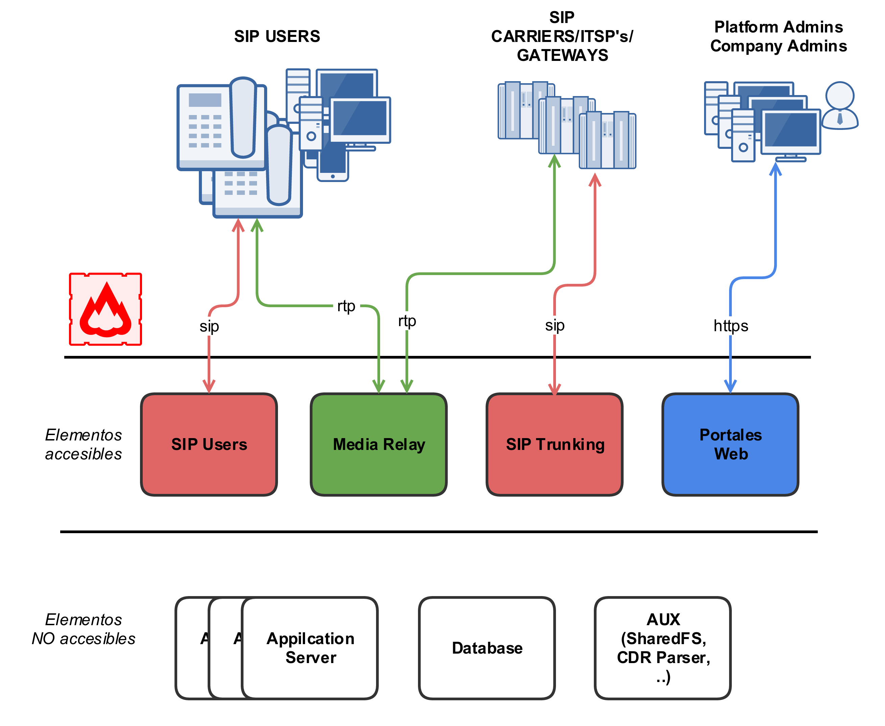Este es otro esquema más conceptual:

Flujo señalización SIP¶
El primer diagrama muestra el tráfico de señalización SIP que ocurre en el establecimiento, modificación y finalización de sesiones acorde al RFC 3261 y otros RFCs relacionados.
Estas son las entidades SIP externas involucradas:
UACs: teléfonos de usuarios, softphones, dispositivos compatibles con SIP.
Proveedores SIP: proveedores usados para la interconexión de IvozProvider con redes externas SIP (y, probablemente, con la PSTN).
Todo el tráfico SIP (en cualquiera de los transportes soportados: TCP, UDP, TLS, WSS) que se envia/recibe desde la plataforma se hará deste las siguiente dos entidades SIP internas de IvozProvider:
De hecho, los UACs de usuario solo se comunican con el Proxy SIP de usuarios y los ‘Proveedores SIP’ solo se comunican con el Proxy SIP de Proveedores.
Dentro de IvozProvider estos dos proxies hablan a los Servidores de Aplicación que ejecutan Asterisk, ya que ningun elemento externo puede hablar con los Servidores de Aplicación directamente.
Flujo audio RTP¶
La sesiones iniciadas por el protocolo de señalizacion SIP implican la compartición de flujos de multimedia entre las entidades implicadas.
Estos flujos emplean RTP para enviar y recibir el propio media, generalmente empleando el protocolo de transporte UDP.
Las entidades externas involucradas en las sesiones RTP se pueden dividir en
Usuarios.
Proveedores.
Ambas entidades intercambian RTP con el mismo servicio de IvozProvider: los servidores media.
IvozProvider implementa servidores media usando tanto RTPengine como RTPproxy.
Al igual que ocurre con SIP, estos servidores de media intercambian RTP cuando es necesario con los Servidores de aplicación, pero nunca permiten que los extremos externos a la plataforma hablen entre ellos directamente.
Tráfico HTTPS¶
HTTPS es el tercer tipo de tráfico que interncambian
El tráfico HTTPS se emplea para:
Provisión de terminales: Muchos teléfonos piden su configuracion al iniciarse y esta puede ser enviada a través de HTTPS.
Portales web: IvozProvider cuenta con 4 portales de web para los diferentes platform roles.
Estos dos tipos de tráfico son gestionados por los Portales web de IvozProvider.
Elementos adicionales¶
IvozProvider cuenta con multiples elementos que no están expuestos al mundo pero juegan un papel crucial.
El perfil mas significativo es el de data que reune toda la informacion de la plataforma and la distribuye entre la mayoría de los softwares restantes. IvozProvider utiliza MySQL para esta tarea.
Otro proceso menos crucial son los gestores de tareas asíncronas: el CDR ha de ser parseado, la llamadas tarificadas, las grabaciones codificadas, etc.
Elementos auxiliares¶
El perfil auxiliar ejecuta programas, que aún no siendo vitales para el flujo de las llamadas, facilitan mucho las tareas para los mantenedores de las plataformas IvozProvider.
De hecho, sin ellos, sería muchísimo más dificil debugear los problemas y la calidad del servicio proporcionado se vería afectada.
IvozProvider incluye:
Homer SIP capture: Este fabuloso software nos permite capturar todo el tráfico SIP para ser analizado posteriormente y obtener estadísticas, métricas de calidad de la llamada, etc. Visite SIP Capture website para más información.
Visor de logs Graylog: Todos los logs de la plataforma IvozProvider se almacenan y muestran con Graylog divido en marcas.
Panel de gráficas Grafana: Grafana nos permite tener gráficas de todo. Literalmente.
Roles de la plataforma¶
Ivozprovider es una solución orientada a operador con múltiples niveles de usuarios.
La siguiente imagen ilustra los niveles que existen, así como la relación entre ellos:

En esta sección se explicará cada uno de estos roles, describiendo sus responsabilidades y sus funciones más importantes.
Rol de administrador global¶
El rol de administrador global (operador en la imagen) lo desempeña habitualmente instalador de IvozProvider.
Tiene visibilidad total de todos los aspectos de la plataforma y suele ser el encargado del mantenimiento de la misma.
Su función más importante es crear Marcas y hacer todo lo necesario para que dispongan de la autonomía necesaria para usar la plataforma:
Configurar sus accesos web.
Configurar el aspecto de su portal de administración de marca: tema, colores, etc.
Aparte de esta función principal, su visibilidad global y acceso total le hacen responsable de:
Monitorizar la plataforma para que esté siempre UP & RUNNING.
Analizar los logs de la plataforma en busca de posibles errores.
Afinar los mecanismos de seguridad para evitar ataques externos.
Obtener estadísticas globales de calidad de llamada.
Ir aumentando los recursos de la plataforma a medida que se vaya necesitando:
Aumentando los recursos de la instalación standalone.
Migrando, llegado el momento, a una instalación distribuida con múltiples AS-es, media relays, etc.
En resumen, es el único rol que no tiene límites dentro de la plataforma, de ahí la denominación God que se utilizará en múltiples lugares de esta documentación.
Importante
Este rol se encarga de mantener la plataforma, adaptándola a las necesidades de cada momento. Su rol no tiene ningún tipo de límite y es el que da acceso a los n operadores de marca.
Rol de operador de marca¶
El operador de marca utiliza la plataforma con un acceso y una visibilidad menor que el rol anterior. En concreto, el operador global le facilita una URL y unas credenciales y ese portal web de operador de Marca es su único interfaz con IvozProvider.
No obstante, este portal le permite desempeñar su función más importante,que es crear empresas y configurar todo lo necesario para que éstas desempeñen su función.
Dado que el operador de marca es el encargado de facturar a sus empresas y de hacer que sus llamadas salgan al exterior, también tiene que gestionar:
Contratos de Peering con otros operadores IP para conectar con la PSTN.
Incluir en los datos de la empresa toda información necesaria para las facturas.
Planes de Precio que ofertarán a sus empresas, qué determinarán cuánto pagan por cada tipo de llamada.
Configurar por dónde sale cada tipo de llamada de cada empresa, en función del destino.
Generar las facturas en cada período de facturación y emitarlas al cliente.
Como se puede ver, las tareas del operador de marca poco tienen que ver con las del operador global, pero son vitales para que los usuarios finales puedan hacer uso de las funcionalidades de IvozProvider.
Importante
En resumen, los operadores de marca dan acceso a los administradores de las empresas a las que den servicio y configuran la plataforma para poder enrutar, tarificar y facturar sus llamadas.
Rol de administrador de empresa¶
El administrador de empresa dispone del acceso web que le proveé el administrador de marca.
Desde su perspectiva, dispone de una centralita virtual en la nube que tiene que configurar para que la utilicen sus usuarios.
Para ello, tendrá que:
Dar de alta terminales, extensiones y usuarios.
Configurar el tratamiento de los DDIs de entrada, para que se comporten como quieran:
Directos a usuario
- IVRs
Grupos de Salto
- Faxes
Dar acceso a los usuarios finales a su portal web, para que configuren a su gusto aspectos como:
Desvíos
No molestar
Llamada en espera
Importante
En resumen, los administradores de empresa son los responsables de configurar su sistema de telefonía a su gusto y de utilizar todas las funcionalidades que proveé IvozProvider.
Rol de usuario final¶
El usuario final dispondrá de dos credenciales, ambas provistas por su administrador de empresa:
Credenciales de acceso web al portal de usuario.
Credenciales SIP para registrar su terminal (o terminales) contra IvozProvider.
Desde el portal de usuario podrán ver sus registros de llamadas y configurar aspectos como:
Desvíos
No molestar
Llamada en espera
Por otra parte, las credenciales SIP le permitirán configurar su terminal (o terminales) para poder emitir y recibir llamadas.
Nota
Unas mismas credenciales se pueden utilizar desde múltiples dispositivos,dando lugar a lo que se conoce como parallel-forking: si llaman al usuario, sonarán todos sus dispositivos activos y podrá contestar la llamada desde cualquiera de ellos.
Importante
Los usuarios son los que utilizan y disfrutan todas las funcionalidades de IvozProvider.
Instalación inicial¶
Tipos de instalación¶
Instalación distribuida¶
IvozProvider está diseñado para que la mayor parte del software trabaje de manera distribuida en lo que llamamos perfiles.
Cada perfil es encargado de realizar una de las funciones de la plataforma:
Base de Datos
Proxy SIP
Servidor Aplicaciones
Portal Web
Para cada uno de estos perfiles existe un paquete virtual que instalará todas las dependencias necesarias (ver Instalar el paquete del rol).
Puedes instalar cuantas instancias desees de cada perfil, pero ten en cuenta que, mientras algunos estan pensados para escalar horizontalmente de manera nativa (por ejemplo: asterisk o media-relays) otros requerirán software adicional para que las máquinas del mismo perfil esten coordinadas (por ejemplo: replicación de bases de datos o balanceo de peticiones web).
Instalación standalone¶
Pero si lo que deseas es tener una plataforma pequeña para realizar tus pruebas o dar un servicio básico, hemos diseñado todas las configuraciones para que puedan convivir en una sola máquina.
Hemos bautizado este tipo de instalaciones como StandAlone y hemos creado CDs automáticos de instalación para que puedas instalarlos en un par de minutos.
Requisitos mínimos¶
Requisitos de sistema¶
IvozProvider está diseñado para funcionar e instalarse a través del sistema de paquetes APT de Debian GNU/Linux.
Importante
Es recomendable instalar IvozProvider en una máquina dedicada para la plataforma. Muchos de los software instalados podrían hacer malfuncionar otros software pre-instalados (por ejemplo MySQL o servidores DNS).
Para una instalación standalone, se requiere al menos:
4 CPUs (x86_64 o i386)
4 Gb memoria
30GB Disco Duro
1/2 IPs públicas (leer nota)
Nota
Desde la versión 1.2 is posible hacer que el proxy de usuarios y el proxy de salida utilicen la misma direción IP pública. En este caso, se cambiarán los puertos del proxy de salida de 5060 (TCP/UDP) a 7060 (TCP/UDP) y de 5061 (TCP) a 7061 (TCP).
Si no está empleando la CDs automáticos de instalación también será necesario:
Instalación base de Debian Jessie 8.0
Acceso a Internet
Instalación por paquetes Debian¶
IvozProvider está diseñado para instalarse y actualizarse mediante paquetes Debian. En concreto, la release actual esta pensada para funcionar sobre Debian Jessie 8.
Se recomienda emplear las guias oficiales de instalación para obtener un sistema base mínimo, ya que toda dependencia que necesite posteriormente será instalada automaticamente.
Tanto si deseas realizar una Instalación standalone o una Instalación distribuida, es preciso configurar los repositorios de paquetes debian de Irontec.
Configurar repositorios APT¶
Actualmente se emplean dos repositorios diferentes tanto para la última release de IvozProvider (oasis) como para la de Klear (chloe)
cd /etc/apt/sources.list.d
echo deb http://packages.irontec.com/debian oasis main extra > ivozprovider.list
echo deb http://packages.irontec.com/debian chloe main > klear.list
Opcionalmente, añadimos la clave publica del repositorio:
wget http://packages.irontec.com/public.key -q -O - | apt-key add -
Instalar el paquete del rol¶
Una vez configurados los repositorios será preciso seleccionar el paquete acorde al perfil que queramos instalar:
- Para una Instalación standalone:
- ivozprovider
Para una Instalación distribuida uno de los paquetes en función rol se desee que desempeñe la máquina
- ivozprovider-profile-data
- ivozprovider-profile-proxy
- ivozprovider-profile-portal
- ivozprovider-profile-as
apt-get update
apt-get install ivozprovider
Completar instalación¶
Las instalaciones distribuidas requieren multiples configuraciones en funcion del rol que se haya instalado. Consulte completar la instalción de un rol para más información.
Las instalaciones standalone cuentan con un menú que ayuda a configurar los datos básicos de los servicios empleados en IvozProvider. Puesto que todos los servicios se ejecutan en la misma máquina, muchos de los procesos vienen configurados automáticamente con los valores por defecto.
El menú permite, entre otros:
Configurar la(s) IP(s) pública(s) de los proxies SIP
El lenguaje por defecto que empleará la plataforma
Las contraseñas para acceder a las bases de datos
Es posible cambiar cualquiera de estos valores una vez instalado IvozProvider volviendo a ejecutar:
dpkg-reconfigure ivozprovider
Importante
Cualquiera de las IPs públicas configuradas en la instalación servirá para acceder al panel web. Las credenciales por defecto son admin / changeme.
CDs automáticos de instalación¶
Puedes descargar uno de los CDs automáticos de instalación de IvozProvider (generados mediante simplecdd) en su versión estable o en una de las builds nocturnas:
Importante
IMPORTANTE: Los CDs de instalación formatearán automáticamente el disco de la máquina.
Configure la máquina para iniciar desde CD, mostrará el menú de instalación de Debian GNU/Linux.
Nota
Si lo desea puede emplear la instalación gráfica del CD, pero los pantallazos a continuación se muestran con la instalaciónestándar.
Seleccione el idioma de la instalación:

Seleccione la ubicación:
Seleccione la configuración de hora:

Nota
En este punto se realizará la configuración automática de red y particionado de disco, así como la instalación del sistema base.
- Configure IvozProvider:

Como se mencionó en Requisitos mínimos se requiere al menos una dirección IP pública para los proxies de Usuarios y Troncales. Recordar que en caso de utilizar una única dirección IP, los puertos SIP del proxy de salida se cambiarán para evitar la colisión entre ambos.
Puede asignar sus valores ahora y configurar sus interfaces mas tarde, o bien puede mostar el siguiente menu para configurar estos valoresmás adelante.

También puede configurar el valor por defecto para acceder a MySQL en este momento.
Nota
Si no configura contraseña para el administrador de MySQL, se empleará la de por defect (changeme). Puede cambiarla más adelantesi lo desea.

Y el idioma por defecto de los portales web:

Nota
No es preciso configurar todas estas cosas durante la instalación.En caso de que algún dato esté sin configurar se mostará un dialogode aviso:

Por último, seleccione el disco donde se instalará el cargador de arranque GRUB.
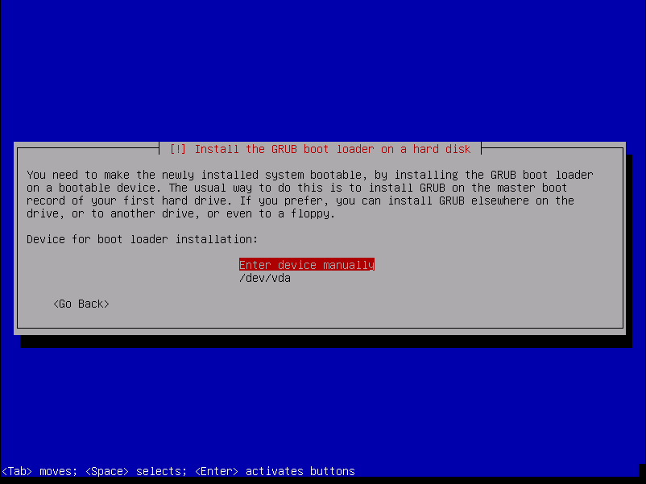Una vez reiniciada la máquina podrá entrar y acceder a través de los portales web!
Importante
Cualquiera de las IPs públicas configuradas en la instalación servirá para acceder al panel web. Las credenciales por defecto son admin / changeme.
Componentes extra¶
G.729¶
Importante
En algunos paises, es posible que tenga que pagar derechos a los titulares de las patentes de G.729. No somos asesores legales al respecto de las patentes activas o retiradas.
Puede emplear G.729 con IvozProvider, pero la instalación debe ser realizada manualmente. El codec G.729 esta optimizado para cada tipo de CPU y versión de asterisk, por lo que cada instalación puede requerir un módulo de codec diferente.
Puede descargar el codec aqui bajo la sección Asterisk 13.
Una vez descargado, mueva el fichero .so a la ruta /usr/lib/asterisk/modules/ y renómbrelo a codec_g729.so
Puede comprobar si el codec es válido reiniciado asterisk y mostrando la lista de traducciones de codes disponibles:
systemctl restart asterisk # Restart asterisk
asterisk -rx 'core show translation' | grep 729
Realizar llamadas internas¶
El objetivo de este bloque será configurar IvozProvider para realizar llamadas internas, partiendo de la instalación base descrita en la sección anterior.
Para conseguir que Alice llame a Bob, tendremos que realizar labores de 3 niveles descritos en Roles de la plataforma, de ahí la organización del siguiente índice en esos 3 bloques:
Gestión General¶
Importante
Cualquiera de las 2 IPs públicas configuradas en la instalación servirá para acceder al panel web. Las credenciales por defecto son admin / changeme.
En esta sección haremos referencia a todo lo relativo al rol operador global, configurable en el bloque Gestión general del panel web (solo visible para God):
Configuración personalizada en la instalación¶
En el proceso de instalación se pregunta al administrador dos direcciones IP, con el fin de arrancar los siguientes 2 procesos:
Proxy de Usuarios¶
Es el proxy SIP expuesto al mundo exterior al que se registran los terminalesde los usuarios.
El valor mostrado en la sección Proxy de Usuarios reflejará la IP introducida en el proceso de instalación.

Proxy de Salida¶
Es el proxy SIP expuesto al mundo exterior al que hablarán los Operadores IP con los que el operador de marca decida hacer peering.
El valor mostrado en la sección Proxy de Salida reflejará la IP introducida en el proceso de instalación.
Nota
Solo se explicita la dirección IP, ya que el puerto siempre será 5060 (5061 para SIP sobre TLS).
Peligro
Estos 2 valores pueden editarse desde la web, pero siempre tienen que tener la dirección IP a la que escuchan dichos procesos.
Configuración global estándar¶
El proceso de instalación incluye otros valores globales que son iguales en toda instalación de IvozProvider (standalone) y que también se pueden ver desde la interfaz web.
Servidores de aplicación¶
En la sección Servidores de Aplicación se listan las direcciones IP donde escuchan los distintos Asterisk que componen la solución que, tal y como se ha mencionado, escalan horizontalmente para adaptarse a la carga de la plataforma.
A diferencia de los Proxies, estos Asterisk no están expuestos al exterior, porlo que en una instalación standalone solo habrá uno y escuchará en 127.0.0.1.

Nota
El puerto en el que escuchan no se recoge en el campo, ya que siempre será 6060 (UDP).
Importante
Desde el momento en el que se añade otro Servidor de Aplicación, se intentará contar con él a la hora de repartir la carga. Si éste no responde, se desactivará automáticamente.
Servidores de Media¶
Los media-relays son los que mueven el tráfico RTP en una llamada establecida y, al igual que ocurre con los Servidores de Aplicación, permiten un escalado horizontal para adaptarse a la carga de la plataforma.
Los media-relays se organizan en grupos con el fin de poder asignar un grupo concreto a una empresa concreta. Cada elemento del grupo tiene una métrica (peso) que permite repartos de carga desiguales dentro de un mismo grupo (por ej.media-relay1 métrica 1; media-relay2 métrica 2: media-relay2 gestionará el audio del doble de llamadas que media-relay1).
Consejo
La asignación de grupos de media-relays concretos a empresas concretas permite asignar recursos estáticos a empresas que requieren tener garantizado unos recursos concretos. Pero, lo más útil de este tipo de configuración es que estos grupos de media-relays pueden estar en ubicaciones geográficas cercanas al emplazamiento de la empresa (y lejanas al resto de la plataforma) para reducir las latencias en sus conversaciones.
En una instalación standalone, no obstante, solo existe un grupo de media-relays:

Por defecto, este grupo solo contiene un media-relay:

Nota
La dirección que aparece es la dirección del socket de control, no la dirección que se acaba incluyendo en los SDPs de negociación de sesión. Por defecto, este único media-relay utiliza la misma IP que el Proxy de Usuarios.
Dominios SIP¶
En la sección Dominios se muestran los dominios SIP que apuntan a las 2 IPs públicas:
IP de Proxy de Usuarios
IP de Proxy de Salida
Tras una instalación inicial existen 2 dominios, uno para cada una de esas 2 IPs:

Estos dominios se utilizan internamente y el servidor de DNS incorporado en la solución los resuelve a las IPs concretas.
Atención
Tal y como se verá en la sección Dominio SIP de la compañía, cada compañía necesitará un DNS que apunte a la IP del Proxy de Usuarios. Una vez configurado, el dominio aparecerá en esta sección para que el operador global sepa los dominios configurados para cada empresa de un vistazo.
Marcas¶
Tras la instalación inicial, la plataforma incluye una marca pre-creada llamada DemoBrand. Inspeccionemos sus parámetros:
- Nombre
Configura el nombre de esta marca.
- NIF
Número empleado en las facturas de la marca.
- Logo
Empleado como logo por defecto en las facturas y portales (si no se especifica otro logo).
- Datos de facturación
Información incluida en las facturas creadas por esta marca.
- Información de notificaciones
Nombre y dirección origen empleada en los emails de notificación enviados por esta marca (faxes, voicemail, etc.)
- Dominio SIP
Introducido en 1.4. Configura el dominio que apuntará al proxy SIP de usuarios empleado por todas las cuentas Retail de esta marca.
- Grabaciones
Configura el límite de espacio de grabaciones para esta marca. Se enviará una notificación cuando el espacio ocupado alcance el 80% y las grabaciones más antiguas serán rotadas cuando se alcance el límte configurado.
- Features
Introducido en 1.3, permite al administrador global elegir las feature de la marca recién creada. Existe una configuración similar en Compañías, para elegir entre las que el administrador global ha habilitado a la marca. Se habilitarán o deshabilitarán secciones en función de esta configuración.
Consejo
Algunas features (actualmente facturas y tarificación) estan relacionadas con las marcas y no pueden ser asignadas a compañías. El resto de features estan relacionadas con compañías y el propio administrador de marca podrá asignarlas a sus compañías.
Advertencia
Deshabilitar la tarificación ocultará las secciones relacionadas y asumirá que un elemento externo se encargá de poner precios a cada llamada (requerirá un módulo de tarificación externa, ¡pídelo!).
Nota
Deshabilitar facturas ocultará las secciones relacionadas y asumirá que un elemento externo se encargará de generar las facturas.
Emular la marca Demo¶
Como mencionamos anteriormente, tras la instalación inicial, la plataforma incluye una marca pre-creada llamada DemoBrand, que es la que utilizaremos para el fin que nos ocupa: tener 2 teléfonos registrados y que se puedan llamar entre sí.
Antes de pasar a la siguiente sección, es importante entender el concepto de Emular una marca:
Como operador global, tienes acceso al bloque Gestión general, que solo ve God.
Aparte de ese bloque, también ves los bloques Configuración de marca y Configuración de empresa que tienen este aspecto:

Atención especial al siguiente botón:

Una vez pulsado, muestra una ventana flotante tal que:

Al seleccionar la marca DemoBrand, el icono cambia y muestra la marca que se está emulando:
La parte superior derecha de la página también muestra la marca que se está emulando:

¿Qué implica esta emulación?¶
Que todo lo que se ve en el bloque ‘Configuración de marca’ es relativo a esa marca y es exactamente lo mismo que lo que ve el operador de marca cuando entra con sus credenciales de acceso.
Truco
Decir exactamente es mucho decir, ya que el operador global ve campos en ciertas secciones del bloque Configuración de marca que el operador de marca no ve. por ej. Al editar una empresa God ve ‘Servidores de media’ y’AS’, que el operador de marca no ve.
Configuración de Marca¶
Para conseguir que esta DemoBrand tenga una compañía con 2 usuarios que se puedan llamar entre sí, vamos a tener que hacer muy poco en este bloque.
De hecho, al acceder a la sección Empresas, vemos que ya existe una compañía DemoCompany que podremos utilizar para cumplir nuestro ansiado objetivo :)

Solo le falta una cosa a esta empresa, marcado con EDIT en la captura anterior.
Dominio SIP de la compañía¶
Tal y como se introdujo en la sección anterior, es imprescindible que cada empresa tenga un dominio público que resuelva a la IP configurada para el Proxy de Usuarios.
Nota
El registro DNS puede ser de tipo A (soportado por todos los hardphones/softphones) o del tipo NAPTR+SRV.
Una vez configurado el dominio (por medio de procedimientos que escapan al objetivo de este documento), bastará con escribir el parámetro en el campo adecuado de nuestra empresa:

Una vez guardada la empresa, este dominio aparecerá en la sección descrita en la sección anterior:

Atención
Es fundamental entender este bloque. Salvo que tengamos una única compañía registrada, sin un registro DNS correctamente configurado apuntando a la IP del Proxy de Usuarios, ¡fracasaremos en nuestro objetivo!
Esta es una buena señal para el dominio que acabamos de configurar, siempre y cuando en lugar de 10.10.3.10 aparezca la IP pública configurada en Proxy de Usuarios.

Peligro
¿Se ha insistido suficiente en que sin un registro DNS correctamente configurado apuntando a la IP del Proxy de Usuarios no funcionará nada?
No tengo tiempo para crear registros DNS¶
Todo lo contado hasta este punto es verídico: a medida que vayamos creando marcas y éstas vayan creando empresas, cada una de ellas necesitará un registro DNS.
Pero la primera empresa de la plataforma es especial y puede apoderarse de laIP del Proxy de Usuarios y usarla como si de un DNS se tratara:
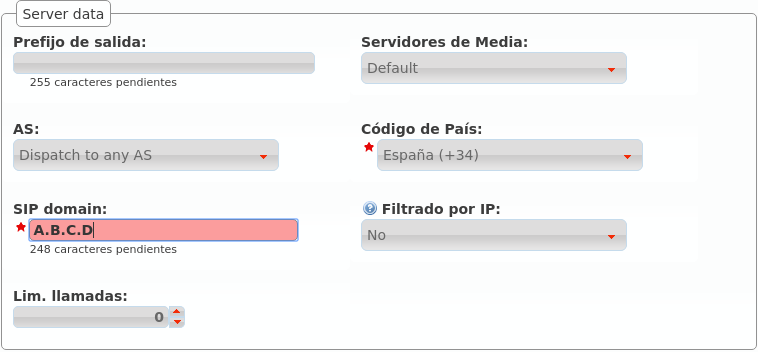A pesar de no ser un dominio, al estar usándose como tal, aparecerá en la sección de Dominios:

Truco
Es importante entender que este truco solo es válido para la primera empresa de la plataforma ;)
Parámetros restantes¶
Estos son los parámetros relevantes configurados en la sección Compañía:
- Nombre
Configura el nombre de la compañía.
- NIF
Número empleado en las facturas de la compañía.
- Datos de facturación
Información incluida en las facturas creadas por esta marca.
- Prefijo de salida.
Algunas compañías emplean un prefijo adicional para las llamadas salientes.
- DDI saliente
Introducido en 1.3, esta opción permite elegir el DDI saliente para las llamadas de esta compañía, si no son especificadas en un nivel inferior (por ejemplo a nivel de usuario)
- Servidores de Media
Como se ha mencionado, los servidores de media pueden ser agrupados para reservar capacidades o para una distribución geográfica. Esta sección le permite asignarlos a las compañías.
- Método de distribución
‘Basado en hash’ distribuye las llamadas en base a un parámetro único por empresa/cliente retail, ‘Round robin’ distribuye las llamadas uniformemente entre todos los AS-es y ‘estático’ se utiliza solo para testing.
- Servidores de aplicación
Si se utiliza ‘estático’, selecciona un AS aquí.
- Grabaciones
Configure el límite de tamaño de las grabaciones de esta compañía. Se enviará una notificación a la dirección configurada cuando se alcance el 80% y se rotarán las grabaciones más antiguas cuando se alcance el límite.
- Features
Introducido en 1.3, permite a los operadores de marca elegir las features de la compañía. Esto habilitará o deshabilitará las diferentes secciones del menú de compañía.
La mayoría de las features son auto-explicativas, pero las notificaciones de voz merecen una explicación: si se habilitan, cuando una llamada falla, el usuario escuchará una locución explicando lo ocurrido (“no tiene permisos para realizar esta llamada”, “la llamada no puede ser tarificada”, etc.)
Advertencia
La rotación de grabaciones ocurre en dos niveles: marca y compañía. Esto significa que las grabaciones de una compañía puede llegar a ser rotadas incluso si esta no ha alcanzado su límite (o incluso si no tiene límite) si se ha alcanzado el límite de espacio de su marca.
Error
De nuevo: La rotación de grabaciones ocurre en dos niveles: marca y compañía. Esto significa que las grabaciones de una compañía puede llegar a ser rotadas incluso si esta no ha alcanzado su límite (o incluso si no tiene límite) si se ha alcanzado el límite de espacio de su marca.
Consejo
Para evitar esto, asegurese que la suma de los límites de las companías no exceda el tamaño asignado a la marca y que todas las compañías tienen un límite de espacio configurado (si es 0, tendrán ilimitado).
Tanto Método de distibución como Servidor de aplicación solo son visibles para el operador global (god).
Advertencia
El método de distribución ‘Round-robin’ está reservado para compañías enormes cuyas llamadas no entren en un AS. Utilizar ‘Basado en hash’ para el resto.
Emular la empresa Demo¶
El proceso de emulación de empresa es idéntico al de emulación de marca, conla diferencia de que filtra el bloque ‘Configuración de Empresa’ en lugar delbloque ‘Configuración de Marca’.


Una vez emulada la empresa, la parte superior derecha de la pantalla mostraráque vamos por el buen camino :)
Configuración de Compañía¶
Estamos cerca de hacer nuestra primera llamada en nuestro flamente nuevo IvozProvider, solo queda crear 6 cosas dentro de nuestra empresa DemoCompany:
2 terminales
2 extensiones
2 usuarios
Creando Terminales¶
Vamos a la sección terminales y... voilà! Ya tenemos 2 terminales pre-creados:
Creando Extensiones¶
Seguimos por tanto en la sección de extensiones, pero se nos han adelantado y ya tenemos 2 extensiones para nuestro uso:
Nada por hacer en esta sección tampoco, ¡vamos a la última!
Creando usuarios¶
Como era de esperar, también tenemos 2 usuarios:
Llegados a este punto y sin necesidad de tocar nada en este bloque, ya tenemos todo listo para hacer una llamada de Alice a Bob.
Configurar terminales SIP¶
Lo único que nos falta es disponer de 2 terminales SIP (hardphone, softphone, Android/IOS APP) y configurarlos como sigue:
ALICE
Usuario: alice
Contraseña: alice
Dominio: users.democompany.com (o la IP si hemos hecho el truco)
BOB
Usuario: bob
Contraseña: bob
Dominio: users.democompany.com (o la IP si hemos hecho el truco)
Truco
Es posible que el usuario y el dominio se nos pida junto, tendremos que introducir alice@users.democompany.com y bob@users.democompany.com,respectivamente (o con la IP si hemos hecho el truco).
Tras configurar los terminales, Alice debería de poder llamar a Bob sin más quemarcar 102 en su terminal.
Recibir llamadas externas¶
El objetivo de este bloque será configurar IvozProvider para recibir llamadas externas.
Para ello, seguiremos los siguientes pasos:
Transformaciones numéricas¶
Concepto¶
IvozProvider está diseñado con la intención de poder dar servicio en cualquier lugar del planeta, no solamente en el país originario de la solución.
Un concepto muy importante para conseguir este objetivo es el de las transformaciones númericas, que consisten en la adaptación de los distintos sistemas de numeración de los países del mundo definidos en E.164 a un formato neutro.
La sección que le permite configurar al operador de marca todo lo relativo a Transformaciones numéricas es:

En concreto, se distinguen 2 casos:
Adaptación en entrada¶
Cuando una llamada entra a IvozProvider procedente de un operador con el que tenemos un acuerdo de peering, hay que adaptar las numeraciones que hacen referencia a:
Origen de la llamada.
Destino de la llamada.
En función del país del operador indicará los números internacionales de una forma distinta. En el caso de un operador español, por ejemplo:
Utilizará 00 + 33 + número para una llamada con origen francés.
Puede que muestre las numeraciones internacionales sin el 00.
Es probable que si la llamada procede del mismo país del operador, no se muestre el prefijo del país (911234567 en lugar de 00 + 34 + 911234567)
En el caso de un operador de Ucrania, que no utiliza 00 como código internacional:
Utilizará 810 + 33 + número francés para el mismo número.
Puede incluso que aparte del código internacional (00 en la mayoría de países del mundo) un operador concreto anteceda sus números con un prefijo concreto.
El objetivo de la adaptación de entrada es que, independientemente de la notación utilizada por el operador, la llamada se acabe en un formato homogéneo y común.
Importante
Este formato común se suele llamar E.164 y muestra los números sin el código internacional y con el prefijo de país: e.g. 34911234567
Adaptación en salida¶
Del mismo modo que el origen y el destino se tiene que adaptar en entrada, habrá que adaptar también las numeraciones en salida en función del operador por el que se vaya a sacar la llamada.
Por ejemplo, para una llamada a un número español:
Operador español: El destino vendrá en E164 (34911234567) y habrá que quitar el prefijo de país: 911234567.
Operador francés: El destino vendrá en E164 (34911234567) y habrá que añadir el código internacional: 0034911234567.
Nota
En resumen, consiste en entregar origen y destino en el formato en el que el operador elegido los espera, para que la llamada progrese con normalidad.
Truco
Las transformaciones numéricas utilizan expresiones regulares muy simples para describir los cambios a realizar en las numeraciones. En Internet se pueden encontrar múltiples tutoriales sobre el uso básico de expresiones regulares.
Transformación ‘Operador Nacional’¶
IvozProvider permite crear automáticamente las reglas de transformación típicas de la mayoría de países.
Para crear el set de reglas necesarias para los operadores españoles, basta con:

Las reglas que se han autocreado realizan las modificaciones adecuadas para operadores nacionales que muestren las numeraciones siguiendo estas reglas:
Número español: se muestra sin código internacional y sin el 34.
Número internacional: se precede de 00 y del código del país.
Los sets de transformaciones numéricas se asignan a PeeringContracts, tal y como veremos en la siguiente sección. Este set será el adecuado para la mayoría de operadores españoles.
Analicemos el set para entender lo que hace cada regla de transformación:

Atención
La creación automática genera las 8 reglas habituales en función de los parámetros especificados. Estas reglas se pueden editar después, el proceso de automatización termina una vez creado el set.
Adaptación en entrada España¶
Aparece en azul en la imagen anterior:
Izquierda llamado/destino
Derecha llamante/origen
Tanto para el origen como para el destino las reglas que se aplican son las mismas:
Las reglas se evalúan antes o después en función del campo métrica (de menor a mayor).
Si una regla no matchea, se evalúa la siguiente regla.
Si una regla matchea, no se evalúan más reglas.
Si ninguna regla matchea, no se aplica ningún cambio.
El campo Buscar se evalúa contra el campo en cuestión (en el caso de la captura, contra el campo Llamado/Destino de una llamada saliente).
Métrica 1: Que empiece por (^) 00 o ‘+’, seguido de un dígito del 1 al 9, seguido de 1 o más dígitos del 0 al 9 hasta el final ($).
Métrica 2: Que empiece por un dígito del 1 al 9, seguido de 1 o más dígitos del 0 al 9 hasta el final ($).
El campo Reemplazar recoge las capturas del campo buscar (expresadas entre paréntesis, 1 para la primera, 2 para la segunda, etc.) y expresa cómo tiene que quedar el número:
Métrica 1: El campo mostrará solo el segundo elemento capturado (2).
Métrica 1: El campo añadirá 34 al primer elemento capturado (1).
Explicación en modo texto:
Métrica 1: Quitar código internacional (00 o ‘+’) si lo hay.
Métrica 2: Añadir 34 a los números españoles mostrados sin prefijo de país para que queden en E.164.
Adaptación en salida España¶

Siguiendo la misma lógica, estas 2 reglas realizan los siguientes cambios sobre el destino en llamadas salientes:
Métrica 1: Si empieza con 34 seguido de más dígitos, quitamos 34. Convierte números españoles de E.164 a formato nacional.
Métrica 2: Si no empieza por 34, añadimos 00. Convierte númerosinternacionales de E.164 a formato internacional español.
Atención
En resumen: las transformaciones numéricas adaptan orígenes y destinos, a E.164 en entrada y a los formatos que los operadores esperan en salida, utilizando reglas con expresiones regulares y métricas agrupadas en sets que se asocian a PeeringContracts.
Configurar Contrato de Peering¶
En IvozProvider se entiende por Contrato de Peering el acuerdo entre un Operador de Marca y un Operador VoIP para sacar y recibir llamadas.
IvozProvider permite integrarse con Operadores IP por medio de la sección Contratos de Peering que pasamos a describir:
Datos básicos¶
Analicemos los campos de un PeeringContract de ejemplo:
Si entramos a editar este Contrato de Peering concreto:
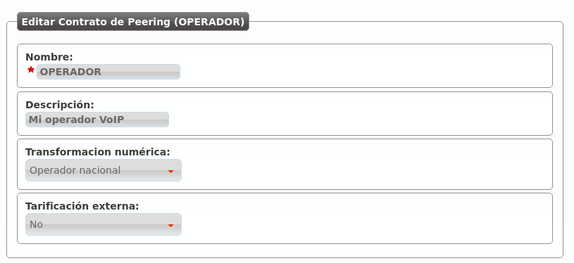- Nombre
Se utilizará para referencia a este Contrato de Peering.
- Descripción
Un campo adicional para escribir algún detalle.
- Transformación numérica
Transformaciones que se aplicarán al origen y al destino a lasnumeraciones que entren o salgan por este contrato de peering (ver Transformaciones numéricas).
- External tarification
Requiere del módulo de tarificación externa y permite tarificar llamadas entrantes a numeraciones especiales. Consultar a los desarrolladores de la solución en caso de estar interesados.
Importante
Los campos marcados con una estrella roja son obligatorios.
Peer Servers¶
El concepto de PeerServer se refiere a los distintos servidores SIP que puede tener un Operador IP para servir su dominio SIP. Para definir los PeerServers del OPERADOR que acabamos de definir, hay que pulsar este botón:

Tal y como indica el 0, no hay ningún PeerServer definido, por lo que añadimos uno:
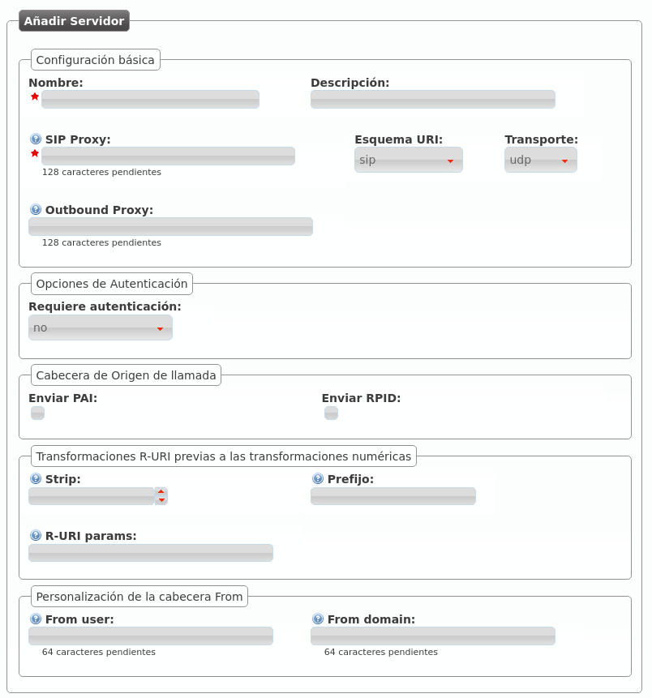- Nombre
Se utilizará para referencia a este PeerServer.
- Descripción
Un campo adicional para escribir algún detalle.
- SIP Proxy
Dirección IP (o registro DNS) del PeerServer. Si utiliza un puerto distinto a 5060, se puede indicar con ‘:’.
- Esquema URI
Los esquemas soportados son sip y sips. Dejar en ‘sip’ en caso de duda.
- Transporte
Los protocolos de transporte SIP soportados. En caso de duda, dejar ‘udp’.
- Outbound Proxy
Normalmente se deja vacío o se pone la IP del dominio indicado en SIP Proxy (para evitar resolución de dominios y hacer que el mensaje SIP contenga el dominio en lugar de una IP). Funciona como un proxy web:en lugar de enviar los mensajes SIP al destino de SIP Proxy, los envía a la IP:PUERTO de este campo.
- Requiere autenticación
Existen contratos de Peering que nos validarán por IP, otros necesitarán que nos autentiquemos en cada sesión que queramos establecer. En caso de ser del último grupo, este selector nos permite introducir un usuario y una contraseña para responder a esa autenticación.
- Cabecera de origen de llamada
Algunos operadores recogen el origen del From. Otros utilizan el From para validar la cuenta de cliente y necesitan cabeceras adicionales para recoger el origen. En caso de duda, marcar PAI.
- Transformaciones R-URI previas a las transformaciones numéricas
Permiten realizar cambios estáticos al destino de la llamada antes de aplicar las reglas de transformación numéricas mencionadas en Transformaciones numéricas. Se pueden quitar unos dígitos del comienzo, añadir un prefijo después e, incluso, añadir parámetros a la URI siguiendo el formato indicado. En caso de duda, dejar todo el bloque en blanco.
- Personalización de la cabecera From
Los operadores que muestren el origen en otras cabeceras (PAI/RPID), es posible que nos soliciten que el From User sea el número de cuenta de cliente y el From Domain (por ejemplo), su dominio SIP. En caso de duda, dejar en blanco.
Truco
Existen muchos campos para poder establecer peering con operadores de todo tipo, pero lo habitual será poner solo nombre y SIP Proxy (para los operadores que nos validen por IP) o nombre, SIP Proxy y Autenticación.
Advertencia
En caso de definir múltiples PeerServers para un PeeringContract, IvozProvider hará balanceo y failover utilizando todos. Es decir, a veces hablará a uno y otras veces a otro. En caso de que uno no le conteste, lo intentará con el resto hasta dar con uno que conteste.
Registro SIP¶
Hay operadores que exigen que tengamos un Registro SIP activo para que nos metan las llamadas de nuestras numeraciones. Es más, existen operadores que exigen un registro activo para poder sacar llamadas a través de ellos.
Nota
IvozProvider soporta peerings de todo tipo, pero recomendamos acordar peerings de tú a tú: sin autenticación, sin registro y validados por IP. Esto evita tráfico innecesario (autenticación en cada sesión y registros periódicos) y simplifica la configuración, quedándose casi todo con los valores por defecto.
Por este motivo IvozProvider permite configurar registros SIP periódicos por medio del siguiente botón:
Si creamos uno nuevo, nos encontramos con la siguiente ventana:

- Nombre de usuario
Número de cuenta de cliente o similar proporcionada por el operador que exige registro SIP.
- Dominio
Dominio o IP del servidor de registros. Habitualmente el mismo que sirve de Proxy SIP en el PeerServer.
- DDI
Se envía en la cabecera Contact y tiene que ser único a nivel de toda laplataforma. En PeeringContracts con un DDI asociado, se recomienda meter ese DDI. En caso de múltiples DDIs asociados, se recomienda meter uno de ellos. En caso de ningún DDI asociado, se recomienda meter un valor único (cualquier valor que te deje guardar).
- Usuario
Usuario de autenticación, prácticamente siempre es igual al “Nombre de usuario” por lo que se recomienda dejar en blanco.
- URI Servidor de registro
Normalmente se puede dejar en blanco ya que se deduce del Dominio introducido. Si no fuera así, poner una dirección IP con ‘sip:’ por delante.
- Realm
Dejar en blanco para aceptar el propuesto por el extremo contrario.Definir solo si de estar familiarizado el mecanismo de autorización de SIP y saber lo que este campo implica.
- Expire
Tiempo que IvozProvider sugerirá como tiempo de expiración del registro.
Truco
Al igual que ocurre con los PeerServers, existen múltiples campos. Hay que tener en cuenta, no obstante, que la mayoría de operadores no deberían de exigir registro y, los que lo hagan, habitualmente solo requerirán de usuario, dominio y contraseña.
Una vez que hemos llegado a un acuerdo con un Operador VoIP y hemos configuradoesta relación de peering, solo faltan dos tareas:
Dar de alta un DDI externo¶
El operador de marca, como único responsable de llegar a acuerdos de peering con operadores IP, es el responsable de dar de alta los DDIs de cada operador.
Para ello, tiene que acceder a la siguiente sección:

Observar que para poder acceder a esta sección el operador de marca (o god) tiene que haber emulado una empresa concreta y acceder desde el bloque Configuración de empresa.
Atención
La sección Configuración de empresa > DDIs es distinta cuando accede un administrador de empresa que cuando accede un operador global o de marca. El administrador de empresa no puede crear nuevos DDIs ni borrar los que ya existen, solo puede editar los que el operador de marca haya creado.
Por otra parte, la sección Configuración de marca > DDIs solo sirve para que el operador de marca pueda ver los DDIs asociados a sus distintas empresas, es un listado en read-only.
Una vez explicados estos conceptos, añadimos un nuevo DDI y rellenamos los campos necesarios:
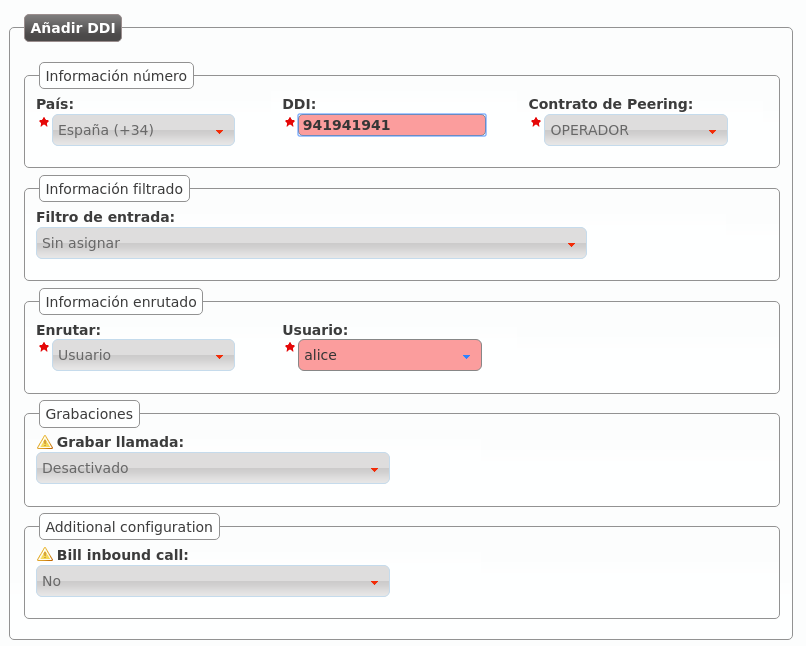- País
El país de la númeración pública que estamos dando de alta.
- DDI
El número en cuestión, sin códigos de país.
- Contrato de peering
El contrato de peering por el que entra la numeración. Esta relación permite aplicar las Transformaciones numéricas adecuadas.
- Filtro de entrada
Permite aplicar lógicas de filtrado en base a horario y calendario, se verán en Filtros de entrada externo. Dejar sin seleccionar para no aplicar filtro alguno.
- Enrutar
Un DDI puede tener distintos tratamientos. Para nuestro objetivo, enrutar al usuario Alice.
- Grabar llamadas
Dejar desactivado de momento, se explicará en Grabación de llamadas.
- Tarificar llamadas entrantes
Requiere del módulo de tarificación externa y permite tarificar llamadas entrantes a numeraciones especiales. Consultar a los desarrolladores de la solución en caso de estar interesados.
Configurar tratamiento en entrada¶
En la sección anterior hemos dado de alta el DDI y lo hemos configurado, pero conviene tener claro que en un uso normal, el administrador de marca simplemente daría de alta el DDI y el administrador de empresa, accediendo a la misma sección, lo configuraría apuntándolo al usuario / grupo de salto / etc. adecuado, configurando horarios, calendarios, etc.
Nota
En este punto, marcando el número público debería de sonar el teléfono de Alice consiguiendo, por tanto, el objetivo de este bloque :)
Realizar llamadas externas¶
El objetivo de este bloque será configurar IvozProvider para realizar llamadas externas salientes, partiendo de la configuración realizada hasta este momento.
Para ello, seguiremos los siguientes pasos:
¿A dónde llamo?¶
En este punto de la configuración, tenemos que configurar IvozProvider para que las llamadas a los destinos externos que vayamos a probar salgan por el Contrato de peering que hemos configurado en el bloque anterior.
Para ello, en primer lugar, necesitamos que los números externos recaigan en un patrón de destino dado de alta con anterioridad.
Patrones de destino¶
Cuando un usuario marca un número externo, IvozProvider intenta calificar estenúmero en uno de los patrones de destino definidos en esta sección:

Lo más normal será que nos interese tener un patrón de destino por cada uno delos 254 países definidos en la ISO 3166. Por ese motivo, IvozProvider incluye estos países y sus prefijos de forma automática:
Dentro de este listado aparece el prefijo de España, que será el grupo del número que probemos en este bloque:
Advertencia
Cada operador de marca puede elegir mantener estos patrones o borrarlos y crear los que le interesen. De hecho, aparte de prefijos, también se pueden definir expresiones regulares. e.g. Queremos crear un único patrón que englobe todas las llamadas: ^[0-9]+$.
Peligro
Crear patrones de destino en base a expresiones regulares puede provocar que un número encaje en 2 patrones. Usar con responsabilidad.
Grupos de patrones¶
Como veremos en la sección de rutas salientes, cada patrón de destino se vinculará a un Contrato de Peering concreto.
Por este motivo, puede ser interesante agrupar los patrones en grupos y así poder vincular un grupo entero a un Contrato de Peering.
Para ello se utiliza esta sección:
Por defecto aparecen los 254 países agrupados en base a su continente definidos en la ISO 3166:

Importante
En resumen, cuando un usuario marca un número externo, IvozProvider busca el patrón de destino al que pertenece para saber por dónde tiene que sacar dicha llamada.
Para conseguir nuestro objetivo de llamar a un número español, no hemos tenido que modificar el contenido de partida de estas dos secciones :)
Ya tenemos nuestra llamada de pruebas categorizada dentro del Patrón de destino ‘España’. Es más, también tenemos un Grupo de patrones de destino que incluye ‘España’, ‘Europa’.
Ahora solo nos falta decir a IvozProvider que las llamadas de ‘España’ o de ‘Europa’ salgan por nuestro Contrato de peering.
Rutas salientes¶
Para realizar esta vinculación, accedemos a la sección Rutas salientes:
Si optamos por enrutar solamente las llamadas de España por nuestro Contrato de peering, tendremos que realizar la siguiente configuración:
Por el contrario, si somos más generosos y decidimos permitir todas las llamadas a países europeos, la configuración a aplicar sería la siguiente:
Existen dos parámetros que merecen explicación:
- Prioridad
Si una llamada concreta encaja con rutas de distinta prioridad, la llamada se sacará por la que menor prioridad tenga siempre y cuando esté disponible.
- Métrica
Si una llamada concreta encaja con rutas con la misma prioridad, la métrica determina cuántas se sacarán por una ruta y cuántas por otra.
Nota
Estos dos parámetros son clave para conseguir dos funcionalidades muy interesantes: load-balancing y failover-routes.
Balanceo de carga¶
El balanceo de carga o load-balancing nos permite sacar un porcentaje de llamadas por una ruta y otro porcentaje de llamadas por otra ruta, es decir, nos permite repartir las llamadas entre dos o más rutas igualmente válidas.
Ejemplo 1
Ruta A: prioridad 1, métrica 1
Ruta B: prioridad 1, métrica 1
Call matching these routes will use route A for %50 of the calls and route B for %50 of the calls.
Ejemplo 2
Ruta A: prioridad 1, métrica 1
Ruta B: prioridad 1, métrica 2
Call matching these routes will use route A for %33 of the calls and route B for %66 of the calls.
Conmutación por error¶
Las rutas en caso de fallo o failover-routes nos permite disponer de una ruta adicional en caso de que la ruta preferida falle.
Ejemplo
Ruta A: prioridad 1, métrica 1
Ruta B: prioridad 2, métrica 1
All calls matching these routes will try to use route A. In case the call fails, the call will be placed using route B.
Truco
Tanto el balanceo de carga como las rutas de fallo permiten encadenar/utilizar más de 2 rutas, aunque en los ejemplo se hayan utilizado solo 2.
Configurar DDI saliente¶
Antes de realizar la llamada externa, estaría muy bien que dicha llamada se presentara con el DDI que ya hemos configurado en entrada, así el llamado podría devolvernos la llamada cómodamente.
Para ello, basta con configurar dicho DDI como DDI saliente de Alice, que será la elegida para realizar la primera llamada saliente de nuestro recién instalado IvozProvider:
Esta configuración se realiza desde Configuración de empresa > Usuarios, editando el usuario de Alice. Si el operador de marca o el operador global el que realiza esta edición, tendrá que haber emulado la empresa previamente.
Advertencia
Sin configurar un DDI saliente para el usuario que realiza la llamada, ésta no saldrá al exterior.
Llegados a este punto y estando deseosos como estamos de hacer nuestra primera llamada, habremos intentando llamar con la configuración actual pero...
Sin plan de precio, no hay llamada¶
Tal y como advertimos cuando describimos las funciones del operador de marca, el operador de marca era el responsable de realizar la configuración necesaria para que todas las llamadas externas se puedan tarificar.
Nota
Billing a call is the action of assigning price to a call that implies cost.
Para evitar que por un descuido el operador de marca no defina el precio para un tipo de llamada y llamadas que implican coste salgan a precio 0, en el momento del establecimiento de una llamada se comprueba que la llamada se va a poder tarificar.
Error
Si una llamada no se va a poder tarificar, IvozProvider no permitirá su establecimiento.
Crear un patrón de precio¶
Del mismo modo que existen los patrones de destino, existen los patrones de precio y se configuran en esta sección:
Importante
Para que una llamada se considere tarificable, tiene que matchear con algún patrón de precio dado de alta previamente.
A diferencia de los patrones de destino, que vienen precreados con los 254 países del mundo, los patrones de precio no se crean ya que lo habitual es que un país se divida en muchos patrones de precio (redes GSM de un operador, numeraciones especiales, números fijos, números móviles, etc.).
Creemos el patrón de precio Spain para nuestra llamada saliente externa:
Crear un plan de precio¶
Un Plan de precio determina el coste de un tipo de llamada (de un patrón de precio) y se configura en esta sección:
Creamos un plan de precio para nuestro objetivo:

Y le añadimos el patrón de precio que hemos creado antes:

Nota
Los números decimales se tienen que introducir utilizando el ”.” como separador decimal (e.g. 0.02)
Encontrar un plan de precios para un destino concreto
Para comprobar que hasta este punto la configuración es correcta, podemos encontrar un plan de precio para una llamada concreta pulsando:
Introducimos el número destino en formato E.164:
Y vemos que matchea con el plan de precio que acabamos de crear:
Vincular plan de precio a empresa¶
Un plan de precios concreto se puede vincular a n empresas y corresponde al Operador de marca realizar esta vinculación.
Para ello, desde la sección Configuración de Marca > Empresas, seleccionando la empresa demo:
La vinculación de Planes de precio y Empresas es efectiva en un período de tiempo concreto, de ahí que haya que seleccionar Fecha inicio y Fecha fin:
La metrica de la vinculación permite vincular más de un plan de precios a una empresa de forma coincidente en el tiempo, aunque ciertos destinos estén incluidos en más de uno de esos planes de precio.
Atención
Una llamada que puede tarificarse en base a más de un plan de precio vinculado a una empresa y activo en un momento dado lo hará en base al plan de precio con menor métrica.
Truco
Esto permite tener un Plan de precios general y matizar el coste de algún tipo de llamada en otro Plan de precio (móviles gratis, por ejemplo).
Simular una llamada desde una empresa concreta
Del mismo modo que al crear un Plan de precios hemos comprobado que a nuestra llamada aplicaba dicho plan, podemos simular una llamada concreta en una empresa concreta y saber qué coste se le aplicaría:
Introducimos el número destino en formato E.164:
Y vemos que matchea con el plan de precio que acabamos de crear:
Nota
En este punto, Alice debería de ser capaz de realizar llamadas nacionales externas, que se tendrían que cursar y tarificar con normalidad.
Funcionalidades de PBX¶
En el bloque anterior hemos conseguido realizar llamadas internas y externas realizando una configuración mínima, partiendo de la configuración que deja el propio instalador y dejando de lado múltiples apartados y funcionalidades.
El objetivo de este bloque será describir cada una de estas secciones con profundidad y ver así las funcionalidades de PBX que IvozProvider ofrece.
Extensiones¶
La configuración de partida incluía 2 extensiones (101 y 102) que apuntaban directamente a Alice y Bob, por lo que apenas dijimos nada sobre la sección Configuración de empresa > Extensiones.
Nota
Una extensión es, por definición, un número interno con una lógica asignada.
Crear una nueva extensión
La ventana de creación de una nueva extensión es tal que así:

- Número
El número que al ser marcado por un usuario interno activará la lógica que sigue. Tiene que tener una longitud mínima de 2 y estar compuesto únicamente por dígitos.
- Enrutar
Este selector nos permite indicar la lógica que seguirá esta numeración cuando sea marcada por un usuario concreto. Al seleccionar un ítem en cuestión, se nos mostrará un selector adicional para seleccionar el grupo de salto, sala de conferencias, etc.
Advertencia
Si existe una extensión cuyo número conflicte con un número externo, el número externo quedará enmascarado y resultará, en la práctica, inaccesible para toda la empresa.
Terminales¶
La sección Configuración de empresa > Terminales permite dar de alta credenciales SIP que podrán ser utilizados por diversos dispositivos SIP para realizar y recibir llamadas de IvozProvider.
La mejor forma de entender la sección es crear uno nuevo y ver los campos que tenemos que cumplimentar:

- Nombre
Usuario que utilizará el terminal para presentarse ante IvozProvider y para realizar la fase de autenticación SIP.
- Contraseña
Contraseña que utilizará el terminal para responder a la fase de autenticación SIP. Utilizar el generador automático de contraseñas para cumplir los criterios de seguridad exigidos.
- Codecs rechazados/permitidos
Determina que codecs de audio y video serán empleados con el terminal.
- Modo de actualización
Indica si el terminal prefiere utilizar reINVITEs o UPDATEs para actualizar la sesión. La sección de ayuda indica qué terminales suelen requerir qué método. En caso de duda, utilizar invite.
- Modelo de terminal
Indica el tipo de provisión que tendrá que recibir este terminal concreto. En el apartado dedicado a la provisión de terminales se verá que existen unos modelos con provisión automática y se explicará todo en profundidad. En caso de no necesitar provisión, utilizar Generic.
- MAC
Campo necesario para modelos que utilizan el sistema de provisión de terminales de IvozProvider. Recoge la dirección física del adaptador de red del dispositivo SIP.
Nota
En la mayoría de dispositivos, siempre que no requieran provisión, bastará con rellenar el nombre y contraseña.
Consejo
Una vez dado de alta el Terminal, en la mayoría de dispositivos bastará con configurar nombre, contraseña y dominio SIP de la compañía para poder llamar.
Control ACL para llamadas¶
Los Permisos de llamada determinan qué usuarios pueden llamar a qué destinos internos.
Atención
Las extensiones internas son accesibles por todos los usuarios, los permisos de llamada solo aplican a llamadas externas.
La configuración de permisos de llamada tiene 2 partes:
Clasificar las llamadas en determinados tipos utilizando expresiones regulares:
A nivel de marca: Configuración de Marca > Patrones de permiso genéricos.
A nivel de empresa: Configuración de Empresa > Patrones de permisos de llamada.
Definir políticas para los patrones deseados: Configuración de Empresa > Permisos llamada
Patrones de permiso¶
La clasificación de llamadas se realiza en las secciones indicadas a nivel de marca o a nivel de empresa.
Nota
Cuando un operador de marca crea una empresa, todos los Patrones permiso genéricos definidos en ese momento a nivel de Configuración de Marca se copian a Configuración de Empresa > Patrones de permisos de llamada. De esta forma, el operador de marca puede definir los más habituales y evitar este trabajo a los administradores de empresa.
La creación de nuevos patrones es muy simple:

Este nuevo patrón de permisos engloba las llamadas que comiencen el prefijo de país español seguido por 6 o 7 y sigan con 8 dígitos del 0 al 9. Es decir, engloba todas las numeraciones móviles nacionales.
Otros patrones de permisos que pueden resultar interesantes son:
- Fijos nacionales (incluyendo numeraciones especiales: 902, etc.): ^34[89][0-9]{8}$
34 (prefijo de país español), un 8 o un 9 seguido de 8 dígitos.
- Fijos nacionales (excluyendo numeraciones especiales: 902, etc.): ^34[89][1-9][0-9]{7}$
34 (prefijo de país español), un 8 o un 9, seguido de 1 dígito del 1 al 9, seguido de 7 dígitos.
- Fijo Reino Unido: ^44[0-9]+$
44 (prefijo del Reino Unido), seguido de más dígitos.
Formato de los números externos
Atención
Las expresiones regulares de los patrones de permiso tienen que estar en formato E.164
Existen dos razones principales para esta decisión:
El mismo patrón aplicará para todos los usuarios de la compañía, independientemente del país del usuario.
Los patrones a nivel de marca se heredarán en la creación de nuevas empresas. La única forma de que esto resulte útil es utilizar un formato estándar.
Además, con este formato es realmente fácil impedir (o permitir) llamadas a todo un país.
Permisos de llamada¶
La definición de un Permiso de llamada utiliza una lógica más fácil de describir con un ejemplo.
Imaginemos que tenemos los siguientes patrones de permisos:

Podríamos definir un Permiso de llamada como el que sigue:

Nota
La acción por defecto describe lo que hay que hacer con la llamada una vez que se han evaluado todas las reglas (permitir/rechazar).
Editamos el permiso de llamada que acabamos de crear para añadir las reglas necesarias:

- La métrica determina el orden de evaluación de las reglas y la acción lo que
se hará con la llamada en caso de matchear (permitir/rechazar).

Una vez hecho lo propio para el otro patrón de permisos, nuestro permiso de llamadas quedará como sigue:

Ya solo faltaría añadírselo a un usuario concreto en la sección Configuración de empresa > Usuarios:

Desde este momento, Alice solo podría llamar a extensiones internas (siempre están permitidas) y a móviles y fijos nacionales.
Usuarios¶
El proceso de instalación nos creó a Alice y a Bob, y esto nos permitió ahorrar mucho tiempo a la hora de conseguir que se llamarán entre ellos.
También nos permitió pasar un poco de puntillas por la sección de Usuarios, que ahora pasamos a definir en profundidad.
Datos personales¶

- Nombre
Se utilizará para referenciar al usuario en múltiples ámbitos, incluyendo el nombre que se presenta en llamadas internas.
- Apellidos
Irá junto con el Nombre en casi todos los casos.
Dirección de correo electrónico del usuario al que se enviarán los mensajes de voz del buzón.
- Código de país / Código de área
Define cómo llama el usuario y qué formato tendrán los números externos que se le presenten.
- Idioma
Cuando una locución se le reproduzca a este usuario, se usará este idioma.
- Zona horaria
Las llamadas listadas en el portal de usuario mostrarán las horas en esta zona horaria.
Credenciales portal de usuario¶

- Activo
Da posibilidad al administrador de la plataforma de desactivar el acceso al portal de usuario.
- Contraseña
Contraseña para acceder al portal de usuario.
- Código QR
Si está activo, mostrará un código QR en el portal de usuario que permitirá configurar los softphones Grandstream Wave.
Configuración básica¶

- Terminal
Los terminales dados de alta en Terminales se listan aquí para realizar la vinculación usuario-terminal.
- Extensión principal
Tal y como se explicaba en Extensiones, fija la extensión del usuario para llamadas internas.
- DDI de salida
Adelantado en Configurar DDI saliente, determina el número que presenta el usuario en llamadas externas salientes.
- Reglas DDI de salida
Gestiona excepciones al parámetro anterior. Leer Reglas DDI de salida para más referencia.
- Permisos de llamada
Asignación de un grupo de permisos explicado en profundidad aquí.
- No molestar
Impide que nadie pueda llamar a este usuario, sin impedirle a él llamar a donde desee.
- Límite de llamadas
Limita el número de llamadas recibidas si el usuario está gestionando un número igual o superior a este límite. El valor 0 desactiva el límite.
- Llamadas desde IPs no autorizadas:
Permitir a este usuario llamar desde IPs no autorizadas. Se limita el número de llamadas salientes para evitar fraude. Seleccionar ‘Ninguna’ permite un número ilimitado de llamadas siempre y cuando se cumpla la política de restricción de IPs de la empresa. Leer Usuarios remotos para más información.
Buzón de voz¶
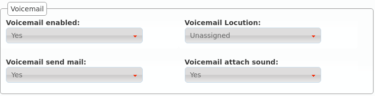- Buzón de voz
Activa o desactiva la existencia del buzón de voz del usuario. Aparte de existir, como veremos más adelante, habrá que desviar las llamadas que queramos al buzón.
- Locución de buzón
Esta locución se reproduce como locución de bienvenida al buzón de voz cuando alguien va a dejar un mensaje de voz al usuario. Solo se reproduce para los desvíos al buzón de voz descritos en desvíos a buzón.
- Notificar por email
Mandar a la dirección del usuario un correo notificando del mensaje de voz.
- Adjuntar audio del mensaje
Adjuntar o no en dicho mail el audio del mensaje
Nota
Si no se configura ninguna locución de buzón, se utilizará la locución por defecto, siempre y cuando el usuario no haya grabado su locución personal utilizando el menú de voz (llamando al código de servicio del buzón de voz).
Jefe-Asistente¶
La funcionalidad jefe-asistente impide que un usuario sea molestado por nadie que no sea:
Su asistente.
Origenes que coincidan con la lista blanca.
Toda llamada con destino a un jefe será desviada al asistente.
- Jefe
Indica que el usuario en cuestión es jefe o no.
- Asistente
Si el usuario es jefe, indica quién es su asistente.
- Lista blanca
Listas de coincidencia con los orígenes que pueden llamar directamente al jefe.
Con la configuración de la imagen, toda llamada a Alice acabará en Bob, salvo las que haga el propio Bob y aquellas cuyo origen coincida con la lista Alice’s friends.
Pertenencia a grupos¶
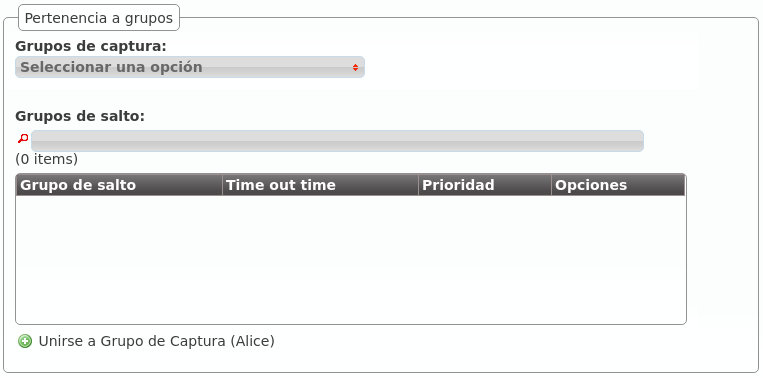Tal y como se verá en las secciones Grupos de salto y Capturas de llamada, un usuario puede pertenecer a uno o a varios grupos de captura y grupos de salto.
Aparte de poder configurar dicha pertenencia desde las propias secciones Grupos de salto y Capturas de llamada, se puede añadir al usuario que estamos editando a los grupos de captura y grupos de salto deseados que ya existan.
En el caso de la pertenencia a grupos de salto, también se puede configurar desde el listado general:

Desvíos de llamada¶
Los desvíos de las llamadas de un usuario concreto se configura pulsando el siguiente botón:

Estos son los campos y los posibles valores:
- Activado
Determina si el desvío debe aplicarse o no. De esta forma, un usuario puede configurar los desvíos que más utilice e ir activándolos y desactivándolos.
- Tipo de llamada
Limita el desvío a cierto tipo de llamadas, a elegir entre externa, interna o ambas
- Tipo de desvío
Indica cuándo aplica el desvío:
Incondicional: siempre
Perdida: cuando no se conteste al de X segundos
Ocupado: cuando el usuario esté ocupado (hablando o con el No molestar activo)
No registrado: cuando el usuario tenga su terminal sin conectar con IvozProvider
- Tipo de destino
Indica a dónde se enviará la llamada cuando el desvío aplique:
Buzón de voz
Número (externo)
Extensión (interna)
Consejo
Si queremos desviar a un grupo de salto, por ejemplo, bastaría con crear una extensión que apunte al grupo de salto deseado y seleccionar Extensión en el Tipo de destino.
Friends¶
La sección Amigos permite a los administradores de empresa conectar su PBX virtual con otras centralitas SIP por medio de trunks SIP. El caso de uso habitual es el de conectar IvozProvider a otra centralita SIP de la empresa, otra sede, etc.
Advertencia
Es importante entender la diferencia entre los Contratos de peering definidos por el operador de marca para conectar con la red pública y los Amigos, definidos por el administrador de empresa para conectar su PBX con otras PBXs.
¿Qué permite?¶
Esta sección permite comunicar los usuarios de ambos extremos del trunk SIP, pero también permite:
Que los usuarios del “otro lado” llamen a la red pública igual que los Usuarios nativos.
Que llamadas de la red pública se puedan dirigir a usuarios del otro extremo del trunk SIP
Tipos de amigos¶
Se pueden unir 2 tipos de centralitas SIP a IvozProvider:
Centralitas con conectividad directa: Esto implica que IvozProvider tiene la posibilidad de hablar SIP directamente sin más que dirigir su tráfico a una IP pública a un puerto concreto.
Centralitas tras NAT, no accesibles directamente. Este tipo de centralitas tendran que registrarse en IvozProvider (exactamente igual que lo hacen los Terminales).
¿Qué llamadas se envían al friend?¶
IvozProvider tiene que saber qué llamadas envía por los distintos friends que se definan. Para ello, el administrador de empresa definirá por medio de tantas expresiones regulares como desee los destinos que son alcanzables por medio del amigo.
Nota
Las extesiones internas tienen prevalencia sobre las expresiones regulares de los friends.
Es decir, IvozProvider encamina una llamada recibida por un usuario o por un amigo aplicando esta lógica:
¿Coincide con una extensión definida en la sección Extensiones?
Si no, ¿coincide con alguna expresión regular vinculada a alǵun friend?
Si no, se considera una llamada externa.
Configuración¶
La configuración de un Amigo es una fusión de la configuración de un Usuario y un Terminal.
Consejo
La equivalencia Amigo <-> Usuario es tal, que los Amigos hablarán SIP con el Proxy de Usuarios.
Estos son los parámetros a configurar a la hora de definir un amigo:
- Nombre
Nombre del Amigo, equivalente al nombre del Terminal. Se utiliza en los mensajes SIP (From User enviado).
- Descripción
No se utiliza más que para describir el amigo
- Prioridad
Sirve para resolver conflictos a la hora de dirigir llamadas hacia un amigo u otro. Si una llamada matchea expresiones regulares más de un friend, se encaminará la llamada al que tenga menor valor de prioridad.
- Contraseña
Cuando el friend nos envíe peticiones, IvozProvider le autenticará utilizando esta contraseña. Es obligatorio el uso de contraseña.
- Conectividad directa
En caso de seleccionar ‘Sí’, se pedirá el protocolo, la IP y el puerto en el que se puede contactar con el friend.
- Permisos de llamada
Un friend, al igual que un usuario interno, puede llamar a usuarios internos (todo lo que esté en Extensiones + Friends). Además, puede llamar a los destinos externos que permita este parámetro (igual que los usuarios).
- DDI de salida alternativo
Este DDI se empleará si el mostrado por el friend no coincide con ninguno de la compañía.
- Código de país y Area Code
Las cabeceras de origen/destino se esperarán y enviarán en estos formatos.
- Codecs rechazados/permitidos
Al igual que un Terminal, un friend habla el codec seleccionado.
- From domain
IvozProvider utilizará este valor en el From Domain de las peticiones al friend.
Nota
Las llamadas a los friends no atraviesan ACLs. Es decir, se consideran internas, por lo que todos los usuarios/amigos pueden llamar a todos los usuarios/amigos.
Configuración Asterisk remoto¶
Al otro lado puede haber entidades SIP muy diversas, pero añadimos la configuración ejemplo para conectar IvozProvider con una centralita Asterisk:
register¶
En caso de no estar directamente visible, el Asterisk tendrá que registrarse en IvozProvider (al igual que hacen los terminales).
La configuración sería tal que:
register => friend-name:friend-password@ivozprovider-company.sip-domain.com
peer¶
[nombre-friend]
type=peer
host=ivozprovider-company.sip-domain.com
context=XXXXXX
disallow=all
allow=alaw
defaultuser=friend-name
secret=friend-password
fromdomain=ivozprovider-company.sip-domain.com
insecure=port,invite
Advertencia
El friend no puede desafiar a IvozProvider, al igual que un terminal no desafía a IvozProvider cuando éste le llama. De ahí el insecure.
Resumen final¶
Lo vital para entender esta sección es pensar que un friend tiene una relación directa con el trío extension-usuario-terminal:
Puede realizar llamadas a todas las extensiones internas y a otros amigos.
Pueden realizar las llamadas que le permita su grupo de permisos.
Presentan el DDI saliente que tengan configurado en sus llamadas salientes.
No desafían a IvozProvider (no hay autenticación SIP en las peticiones hacia ellos).
Responden a los desafíos de IvozProvider (hay autenticación SIP obligatoria en las peticiones desde ellos).
Hablan al Proxy de usuarios, igual que los terminales. De hecho, el tráfico SIP de una llamada de un friend es indistinguible al tráfico SIP de una llamada de un terminal.
Música en espera¶
La música en espera suena cuando un usuario retiene la llamada y su interlocutor queda a la espera de seguir la conversación.
IvozProvider permite definir la música que sonará en estos momentos en 2 niveles distintos:
A nivel de operador de marca: Configuración de Marca > Músicas en espera genéricas
A nivel de administrador de empresa: Configuración de Empresa > Música en espera
Si una empresa define su música en espera, sonará. Si, por el contrario, no define ninguna, sonará la que haya definido el operador de su marca.
Nota
Se pueden definir más de una música en espera y el sistema elegirá de forma aleatoria la música en espera para cada llamada.
Añadir una nueva música en espera

Una vez encodeada el campo Status muestra que está ready y se utilizará en las próximas llamadas:

Truco
IvozProvider reconoce archivos de audio en los formatos más comunes y los encodea a los formatos óptimos para la plataforma.
Después de encodear, podemos descargar el archivo original y el convertido sin más que editar el ítem:

Locuciones¶
Las locuciones de la plataforma se crean y se suben de forma idéntica a cómo lo hacen las músicas en espera.
La sección que permite al administrador de empresa subir las locuciones que utilizará en diversos puntos de la configuración (IVR, etc.) es Configuración de Empresa > Locuciones.

Atención
Las locuciones pueden ser grabadas desde cualquier terminal marcando la extensión de grabado que se muestra en su pantalla de edición.
Consejo
La única diferencia entre una locución y una música en espera es su uso: la primera sonará cuando el administrador de empresa lo indique (fuera de horario, IVRs, etc.) y la segunda, en cambio, cuando la llamada sea retenida por un usuario.
Reglas DDI de salida¶
La mayoría de entidades en IvozProvider requiren un DDI saliente para poder realizar llamadas a números externos. Esto incluye: Usuarios, Friends, Faxes, Cuentas Retails, etc..
Pero existen algunos casos en los que un solo DDI de salida no es suficiente, y el DDI presentado depende del número llamado. Para lograr esta selección dinámica de DDI saliente se pueden emplear las Reglas DDI de salida.
Antes de crear una nueva regla, es necesario primero agrupar los números destino en Listas de coincidencia.
Para este ejemplo, crearemos una lista de los números móviles corporativos con todos los números de los trabajadores de la compañía. Cuando llamemos a esos números, mantendremos el DDI de salida original asignado al usuario, y para el resto de casos, forzaremos el DDI al principal de la compañía.
Crear una nueva Regla DDI de salida
La pantalla principal de creación define la acción que se realizará cuando el destino no coincida con ninguna de las reglas, así que definiremos aquí la acción de forzar el DDI principal de la compañía.
Asignar acciones a las reglas
Ahora añadiremos una nueva regla que coincidirá con nuestros móviles para mantener el DDI saliente del usuario sin tocar.
Asignar reglas a los llamantes
Como último paso, tendremos que configurar quien emplea esta regla para cambiar dinámicamente su número presentado. Esto puede realizarse en la pantalla de edición de Compañía o en la pantalla de edición de Usuario.
En este caso, el usuario presentará el DDI 777777777 cuando llame a los móviles corporativos y 666666666 cuando llame al resto de números externos.
Atención
La implementación actual de Reglas DDI de salida no funciona para llamadas desviadas (fuera de horario, festivo o desvíos de usuario).
Filtros de entrada externo¶
Una de las configuraciones más habituales que todo administrador de empresa querrá realizar en un momento dado es poner filtros de horario y de calendario a sus DDIs externos.
Para ello, el primer paso es crear un horario.
Horarios¶
La sección Configuración de Empresa > Horarios permite definir los tramos horarios en los que un DDI externo está dentro de horario.
La interfaz que se le presenta al administrador de empresa cuando añade un horario es la siguiente:

Con la configuración anterior, hemos definido el tramo horario de mañana de una empresa de Lunes a Jueves.
Sigamos con el ejemplo y definamos el tramo horario de tarde de Lunes a Jueves:

Y el horario reducido de los viernes:
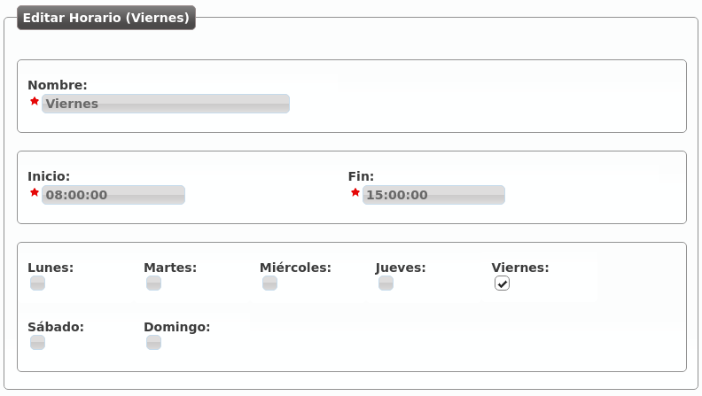Ya tenemos los siguientes tramos horarios que, combinados, describen un horario de oficina tradicional:

Advertencia
Los horarios definen, una vez sumados, los tramos horarios activos: toda hora que no caiga dentro de uno de los tramos agrupados será considerada como llamada fuera de horario.
Calendarios¶
Los calendarios definen, una vez sumados, los días que se tienen que considerar festivos.
Imaginemos que creamos 3 calendarios tal que:

La creación de calendarios solo requiere dar un nombre al mismo, una vez creado hay que añadir días festivos a dicho calendario pulsando el botón de la derecha del lápiz:

Desde este momento, ese calendario tiene marcado el día 1 de Enero de 2016 como día festivo con locución de festivo especial llamada “Feliz año”.
Advertencia
Los calendarios tienen una lógica contraria a los horarios: si un día concreto no está definido como festivo en uno de los calendarios, será considerado como día laborable.
Consejo
Si un día es festivo en un calendario y no hay locución de festivo especial, se reproducirá la locución de festivo del filtro de entrada externo (ver más abajo).
Crear un filtro de entrada externo
Una vez que tenemos unos horarios y unos calendarios creados, llega el momento de agruparlos en lo que en IvozProvider se conoce por Filtro de entrada externos.
El interfaz que se le presenta al administrador de empresa es el siguiente:
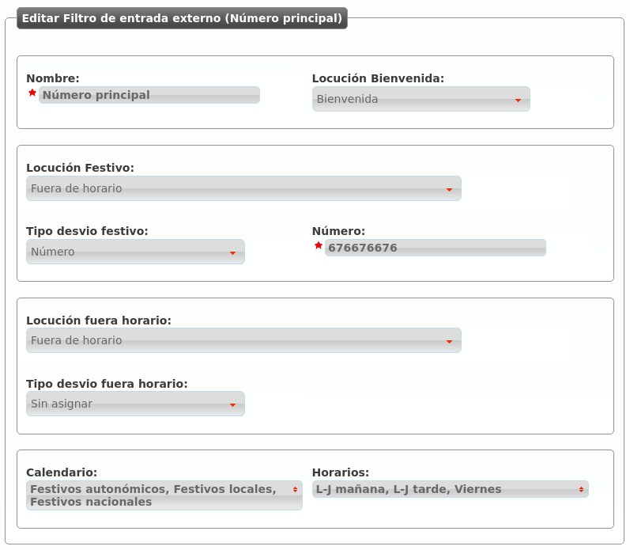- Nombre
Nombre con el que se referenciará este filtro.
- Locución de bienvenida
Esta locución se reproduce siempre que la llamada no se va a rechazar por festivo o fuera horario (es decir, en una hora normal de un día normal).
- Lista negra
Los origenes externos serán comprobados contra las Listas de coincidencia asociadas, si se encuentra una coincidencia, la llamada será directamente rechazada.
- Lista blanca
Los origenes externos serán comprobados contra las Listas de coincidencia asociadas, si se encuentra una coincidencia, la llamada será directamente enrutada al destino del DDI, ignorando el proceso del filtro. Tenga en cuenta que las listas negras son comprobadas antes que las listas blancas.
- Locución de festivo
Esta locución se reproducirá cuando el día de hoy esté marcado como festivo en uno de los calendarios y no se haya definido una locución de festivo especial en dicho calendario para ese día.
- Tipo de desvío festivo
Si una llamada entra un día festivo, aparte de la locución de festivo (si la hay), se puede realizar un desvío a un buzón de voz, a un número externo o a una extensión interna. En el ejemplo, la llamada se desviará los días festivos al móvil 676 676 676.
- Locución fuera horario
Esta locución se reproducirá cuando, siendo un día no festivo, la hora actual no esté dentro de ningunos de los horarios vinculados.
- Tipo de desvío fuera horario
Lo mismo que en festivo, pero para el caso de fuera horario. En la imagen, no se ejecutaría ningún desvío.
- Calendarios
Permite seleccionar múltiples calendarios, de forma que el calendario del filtro es la suma de todos ellos.
- Horarios
Permite seleccionar múltiples horarios, de forma que el horario del filtro es la suma de todos ellos.
Atención
El día festivo tiene prevalencia sobre el fuera horario. Primero se evalúan los calendarios, luego los horarios.
En la siguiente sección veremos como este filtro se asigna a los DDIs externos que queramos, definiendo así el comportamiento de los mismos fuera de horario y en días festivos, así como dentro de horario en el caso de setear locución de bienvenida en el filtro.
Listas de coincidencia¶
Las listas de coincidencia estan diseñadas para agrupar números conocidos o patrones numéricos para asociarlos a distintos tratamientos.
En función de la sección en la que se empleen, las listas se emplearán para comprobar un origen o destino de la llamada, por lo que se recomienda emplear nombres distintivos para las listas de coincidencia.
Por ejemplo, como se menciona en la seccion anterior Filtros de entrada externo, las listas blancas y negras pueden contener una o más listas de coincidencia. En este caso, el origen de la llamadas será comprobado contra las entradas de la lista para determinar si se deberá ignorar el filtro o rechazar la llamada directamente.
Nota
Las listas de coincidencia por si mismas no tiene un comportamiento asociado, tan solo proveen una manera común de agrupar números y patrones que serán empleados en otros procesos.
Atención
Tenga en cuenta que en función de donde se emplee la lista, se comprobarán el origen o el destino de la llamada.
La sección Configuración de Empresa > Listas de coincidencia permite definir las diferentes listas que agruparán números y patrones.
La interfaz que se le presenta al administrador de empresa cuando añade un horario es la siguiente:
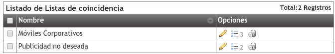Tras la creación de la lista, se podrán incluir entradas en esta.
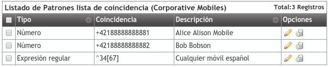Tal como se muestra, la lista puede contener números específicos o grupos empleando Expresiones regulares
Candados¶
Los candados son una forma simple pero poderosa the crear bifurcaciones a la hora de entregar llamadas. Esta bifurcación se hará en función del estado de los candados en un momento concreto.
Abierto: luz verde, adelante.
Cerrado: luz roja, paso prohibido.
Se utilizan como un criterio más en las reglas de rutas condicionales (ver cómo en Rutas condicionales).
Creación de candados¶
Cuando creas un nuevo candado en la sección Candados, se te presentan los siguientes campos:
- Nombre
Nombre identificativo del candado.
- Descripción
Una simple descripción.
- Estado
Estado inicial del candado: abierto o cerrado.
Códigos de servicios de candados¶
Aunque en la creación se pueda indicar el estado inicial del candado y éste pueda ser modificado editando el candado, la forma más habitual de interactuar con los candados es usando los códigos de servicio listado en la sección Candados.
Estos códigos tienen dos partes:
Código de servicio: configurado en la sección Servicios.
- Lock id: immutable numeric id assigned to each lock.
Truco
Existen 3 códigos de servicios disponibles para las operaciones más comunes:
Abrir Candado
Cerrar Candado
Conmutar Candado
Leer Servicios adicionales para más detalles.
Rutas condicionales¶
Las rutas condicionales permiten alterar la lógica de llamadas bajo los siguientes criterios:
Quién está llamando.
A qué hora está llamando.
Qué día está llamando.
Estado de candado(s)
Las rutas condicionales se pueden elegir en tres secciones:
- DDIs
Extensiones
Opciones de IVR a medida
Truco
El resto de secciones pueden utilizar rutas condicionales por medio de una extensión que apunte a una ruta condicional.
Crear un ruta condicional¶
El primer paso es crear una ruta condicioal en Rutas condicionales:
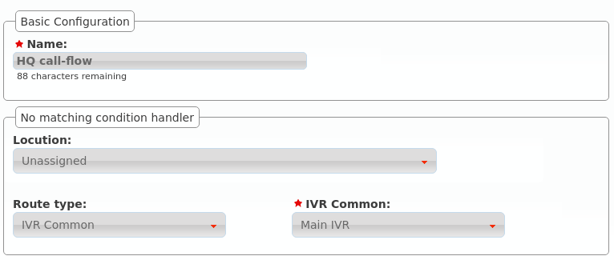En la creación definimos cuál será el comportamiento por defecto en caso de que ninguna regla aplique.
Añadir reglas¶
Una vez creada, necesitamos añadir reglas, por ejemplo:
Llamadas desde Japón y Alemania recibidas por la mañana, a un usuario concreto

Llamadas desde Japón y Alemania recibidas por la tarde, a otro usuario

Utilizar un IVR distinto para los días de verano

Con estas reglas de ejemplo, nuestra ruta condicional tendrá este aspecto

Nota
Desde la versión 1.7 de IvozProvider se pueden utilizar Candados (ver Candados) como un criterio más.
Notas sobre este ejemplo
Las reglas se aplican en orden de métrica, de menor a mayor. Una vez que una regla se cumple, se aplica su lógica.
- Rules may have from 1 to 4 criteria:
Ninguno, uno o más listas de coincidencia (pre-creadas, ver Listas de coincidencia)
Ninguno, uno o más listas de horarios (pre-creadas, ver Horarios)
Ninguno, uno o más listas de calendarios (pre-creadas, ver Calendarios)
- None, one or more route locks (pre-created, see Candados)
- These 4 criteria are combined (applying an AND logic).
Importante
Cuando se añade más de un candado, basta con que uno de ellos esté abierto para que el criterio se considere válido.
Utilizar una ruta condicional¶
El comportamiento cuando la opción de un IVR o una extensión se enruta a una ruta condicional es fácil de entender, pero su utilización con DDIs merece una explicación adicional.
Imagina este escenario:

El DDI tiene un filtro de entrada externo y se enruta a nuestra nueva ruta condicional
Cuando se recibe una llamada:
Se evalúa el filtro de entrada externo:
Si el día actual está marcado en alguno de sus calendarios, se aplica la lógica de festivo.
Si la hora actual no está incluida en ninguno de los horarios seleccionados, se aplica la lógica de fuera horario.
Si ninguna de las anteriores lógicas del filtro de entrada externo aplica, se evalúa la ruta condicional.
Atención
Las rutas condicionales no son un reemplazo para los filtros de entrada externos. El filtro se evalúa en primer lugar, la ruta condicional después.
Grupos de salto¶
Los grupos de salto nos permiten definir lógicas de ringado más allá de la básica llamada a usuario.
Existen de varios tipos:
- A todos
La llamada suena en varios terminales a la vez durante el tiempo definido.
- Secuencialmente
Suenan los usuarios definidos, en el orden definido y durante el tiempo definido a cada uno de ellos. Al acabar la secuencia, la llamada se cuelga.
- Secuencialmente (infito)
Suenan los usuarios definidos, en el orden definido y durante el tiempo definido. Al acabar la secuencia, se vuelve a iniciar la secuencia.
- Aleatoriamente
Reparte las llamadas entre los usuarios elegidos de forma aleatoria, sonando cada uno de ellos el tiempo acordado. Una vez que suenan todos, la llamada se cuelga.
Ejemplo 1: Grupo de salto ringall
Creemos por ejemplo un grupo de salto que llame a la par a nuestros 2 usuarios durante 30 segundos:

Pulsando el icono de las personas podemos añadir a Alice y Bob a nuestro grupo de salto:

Ejemplo 2: Grupo de salto secuencial
Editemos ahora este grupo de salto para que llame 10 segundos a Alice y después 15 segundos a Bob, reiniciando la secuencia si ninguno de los 2 contesta:

En este caso tenemos que indicar una prioridad (los usuarios suenan de menos a mayor prioridad) y un tiempo de ringing:

Consejo
Para que ciertas lógicas (desvíos, etc.) alcancen un Grupo de salto, basta con crear una extensión apuntando a dicho grupo de salto y utilizar esta extensión como destino de la lógica.
Creemos la extensión 200 que apunte a este grupo de salto:

Consejo
Al configurar un grupo de salto, puedes evitar que las llamadas generen llamadas perdidas en los miembros con el parámetro Evitar llamadas perdidas:
Sí: las llamadas del grupo de salto no generarán perdidas nunca.
No: El comportamiento dependerá del tipo de grupo de salto:
RingAll: las llamadas generarán perdida solo si no contesta ninguno de los miembros.
Resto de tipos: las llamadas generarán perdida en los miembros que no contesten.
Colas¶
El comportamiento básico de colas está incluido en la version 1.3 de IvozProvider. Es una aproximación simple con el único propósito de proveer un mencanismo para procesar más llamadas que usuarios puedan atenderlas.
Advertencia
Colas y Callcenter son términos cercanos pero diferentes. IvozProvider no es un producto adecuado para callcenters, y no proporciona las funcionalidades avanzadas cruciales para ellos (como Reportes, visualización realtime, estadísticas de colas, etc..).
En Instalaciones distribuidas el uso de colas solo es compatible con una asignación estática o ‘basada en hash’ (ver Método de distribución aquí).
Consejo
Los operadores de marca pueden elegir que Compañía tiene colas (ver Features en Configuración de Marca y Configuración de Compañía).
Configuración de cola¶
Estas son las configuraciones relacionadas con una cola:
- Nombre
Empleado para referenciar esta cola
- Peso
Cuando un miembro está en varias colas, se atenderán primero las llamadas de las colas con mayor peso.
- Estrategia
¿Como se enviarán las llamadadas encoladas? Llamando a todos los miembros, llamando a uno al azar, etc.
- Duración llamada a miembro
Tiempo en segundos que se llamará a cada miembro de la cola
- Descanso miembro
Tiempo en segundos que el miembro no será molestado tras atender una llamada de cola.
- Anuncio
Seleccione la locución y frecuencia. Las llamadas esperando en la cola escucharán esta locución.
- Configuración no contesta
Limita el tiempo que una llamada esperará en la cola y el tratamiento a realizar cuando se supere ese tiempo.
- Configuración cola llena
Limita el número de llamadas que podrán esperar en la cola y el comportamiento a realizar cuando se alcance esa cantidad.
Además de crear una cola, es preciso asignarle usuarios. Estos usuarios tendrán una prioridad: Un usuario de prioridad alta no será no será molestado siempre que exista un usuario de menor prioridad disponible.
Consejo
Una llamada puede ser enviada a una cola eligiendo la opción cola del selector “Enrutar” disponible en varias seciones de IvozProvider (extension a cola, DDI a cola, ...)
Estrategia de cola¶
La estrategia de cola siempre aplica a los miembros de la prioridad actual comenzando con la menor de las prioridades y saltando a la siguiente prioridad solo cuando todos los miembros de la actual estén ocupados o no disponibles.
- A todos
La llamada hará sonar todos los miembros de la prioridad actual al mismo tiempo durante un tiempo predefinido.
- Menos reciente
La llamada saltará de un miembro a otro en un orden predefinido en base a la última vez que los miembros atendieron a llamadas. Miembros cuya llamada atendida sea mas antigua serán llamados primero.
- Menos atendidas
La llamada saltará de un miembro a otro en un orden predefinido en base al número de llamadas atendidas. Miembros con menos llamadas antendidas serán llamados primero.
- Aleatoriamente
La llamada saltará de un miembro a otro en un orden aleatorio.
- Secuencialmente (memoria)
La llamada saltará de un miembro a otro en un orden predefinido empezando a partir del último miembro que atendió una llamada.
- Secuencialmente (∞)
La llamada saltará de un miembro a otro en un orden predefinido en base a la fecha de creación de cada miembro.
Interactive Voice Response (IVR)¶
Un IVR es la forma habitual de realizar menús telefónicos en los que el llamante puede decidir el destino de su llamada sin más que pulsar dígitos en base a las locuciones que se le van reproduciendo.
IVRs genéricos¶
En los IVR genéricos el llamante marca directamente una extensión interna que conoce (o que se le indica en la locución de bienvenida) y el sistema le pone en contacto con dicha extensión de forma automática:
Describamos cada uno de los parámetros de un IVR genérico:
- Nombre
Forma de referenciar el IVR
- Timeout
Tiempo adicional al de la locución de bienvenida que el sistema espera a que el interlocutor marque los dígitos.
- Locución de bienvenida
Locución que se le presenta al llamante invitándole a marcar la extensión con la que quiera hablar.
- Locución de éxito
En caso de que la extensión marcada sea correcta, se reproducirá esta locución (típicamente dirá algo así como “Contactando...”).
- Configuración sin entrada
Si el llamante no introduce ningún digito, se reproduce la locución indicada y se desvía la llamada al número externo, extensión interna o buzón seleccionado.
- Configuración Error
Si lo que ha marcado el llamante no es válido, se reproduce la locución indicada y se desvía la llamada al número externo, extensión interna o buzón seleccionado.
IVRs a medida¶
A diferencia de los IVRs genéricos en donde el llamante solo puede marcar extensiones internas, los IVRs a medida permiten marcar dígitos que luego se pueden convertir a lo que el administrador de empresa desee.
Consejo
El caso más típico es el IVR que dice algo así como “Marque 1 si quiere hablar con administración, marque 2 si quiere hablar con informática...”
Los campos que se presentan son prácticamente idénticos al IVR genérico:
Pulsando el botón de la siguiente imagen se pueden definir las equivalencias deseadas:

En este caso se puede marcar 1, 2 y 3 (todo lo demás será considerado inválido y activará la Configuración de Error):

1: Llamada a la extensión interna 200, creada en la sección anterior y que apunta al grupo de salto Recepción.
2: Llama a la extensión interna 101.
3: Desvía la llamada al número externo 676 676 676.
Nota
Cada una de las opciones del IVR a medida permite la selección de una locución que pisa a la locución de éxito si está definida. De esta forma aparte de tener una locución de éxito genérica con “Contactando” podríamos tener otra que dijera “Contactando con Administración, espere por favor”.
Las opciones son expresiones regulares
Aunque en el uso más habitual las opciones del IVR sean de un único dígito del 0 al 10, las opciones se interpretan internamente como expresiones regulares. De este modo, se podría añadir una opción “^2[0-9]{2}$” para agrupar el comportamiento de los números del 200 al 299. Es importante ajustar el valor del parámetro Max digits“
Error
Para evitar comportamientos no deseados, en caso de utilizar opciones de más de un dígito, utilice la notación de expresiones regulares (‘^1$’ en lugar de ‘1’, ‘^10$’ en lugar de ‘10’, etc.).
Salas de audioconferencias¶
IvozProvider provee la funcionalidad de salas de audiconferencias que se pueden configurar en la sección Configuración de empresa > Salas de conferencias.
Crear una sala de audioconferencias
La siguiente imagen ilustra el proceso de creación de una sala de audioconferencias:
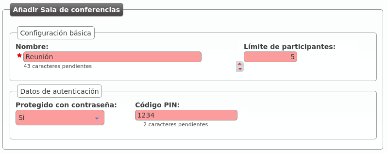- Nombre
Nombre por el que se referenciará la sala en otras secciones
- Límite de participantes
Apartir del número especificado, no se admitirán más miembros.
- Protegido con contraseña / Código PIN
Se puede forzar al sistema a pedir un PIN para poder entrar. En caso de activar, se puede introducir un PIN numérico.
Nota
Para desactivar el límite de participantes, configurar su valor a 0.
Asociar una extensión o un DDI externo
Para poder meter participantes, el primer paso sería asociar una extensión interna a la sala, para poder desvíar a la misma, transferir, etc.:

En la siguiente sección veremos como también se puede apuntar un DDI externo a una sala de conferencias, para meter en la sala a gente externa a la empresa.
Consejo
Existen otras formas de meter un participante externo a una sala de audioconferencias sin dedicar un DDI externo: que alguien de dentro transfiera la llamada a la extensión de la sala, acceder por medio de un IVR, etc.
DDIs externos¶
En la sección preliminar Dar de alta un DDI externo se describió con todo detalle la configuración necesaria para configurar un DDI externo directo a un usuario.
Filtro de entrada¶
Podemos seleccionar el Filtro de entrada externo configurado en la sección anterior.

Tratamientos¶
Vemos que tenemos más opciones aparte de enviar la llamada, una vez superado los filtros de horario y calendario (y previa locución de bienvenida), directamente a un usuario:


Consejo
También podemos apuntar el DDI a un fax virtual, pero esto se verá en el siguiente bloque.
Capturas de llamada¶
Se entiende por captura de llamada la acción de un usuario que escucha (o se entera de otro modo, vía panel de supervisión, etc.) que una extensión está sonando y, desde su terminal, roba dicha llamada.
IvozProvider soporta dos tipos de captura de llamadas:
- Captura de llamadas directa
En las capturas de llamadas directas el usuario indica un código que incluye la extensión del teléfono cuya llamada quiere robar. Si el código fuera *95, por ejemplo, marcaría *95101 para capturar una llamada que esté sonando en la extensión 101.
- Captura de grupo
En las capturas de llamadas indirectas, en cambio, el usuario indica un código y el sistema busca qué teléfono está sonando dentro de sus grupos de captura.
Captura de llamadas indirecta¶
Para poder realizar capturas de llamada indirectas, el usuario que captura tiene que pertener al mismo grupo de captura que el usuario al que pretende capturar.
La sección Grupos de captura de llamada nos permite crear estos grupos y decir qué usuarios pertenecen a ellos:

Como vimos en la sección de Usuarios, también se puede editar un usuario para editar los grupos de captura a los que pertenece.
Nota
Un usuario puede pertenecer a más de un grupo de captura, el sistema tendrá en cuenta todos sus grupos.
Código de captura de llamada¶
IvozProvider permite definir los códigos de captura a 2 niveles:
A nivel de marca en Configuración de Marca > Servicios.
A nivel de empresa en Configuración de Empresa > Servicios.
Esto permite que el administrador de marca pueda definir unos códigos genéricos para todas sus empresas y que, las empresas que deseen utilizar otros códigos, puedan redefinirlos.
La siguiente sección explica todo lo relativo a servicios, que engloba los códigos de captura y otros servicios adicionales a los que se accede marcando códigos que comienzan por *.
Servicios adicionales¶
Existen servicios especiales a los que se accede marcando códigos especiales desde un terminal de usuario cuando éste está en reposo.
Peligro
Los servicios que se definen en esta sección no son accesibles en medio de una conversación. Se activan llamando a los códigos que se mencionarán, no marcándolos en medio de una conversación.
Listado de códigos a nivel global¶
En el momento de realizar esta documentación, existen los siguientes servicios especiales visibles en la sección Gestión general > Servicios:

- Captura de llamadas directa
Es el servicio que permite capturar metiendo el código que se asigne seguido de la extensión del teléfono a capturar.
- Captura de grupo
Es el servicio que permite capturar el teléfono que esté sonando dentro de tu(s) grupo(s) de captura.
- Consultar el buzón de voz
Este servicio permite acceder a un menú de voz que te presenta los mensajes de voz nuevos, viejos, etc. Es una alternativa a la recepción de mensajes de voz vía correo electrónico. A partir de 1.4, este servicio acepta una extensión opcional trás el código de servicio para poder acceder a los buzones de otros usuarios. Los usuarios pueden proteger su buzón de voz empleando las opciones del menú de voz interno.
- Grabar locución
Este servicio permite grabar la locución llamando desde cualquier terminal de cualquier usuario a un código especial. Las instrucciones se mostrarán en el idioma del usuario.
- Abrir Candado
Al llamar a este código de servicio se abrirá el candado (ver Candados).
- Cerrar Candado
Al llamar a este código de servicio se cerrará el candado (ver Candados).
- Conmutar Candado
Al llamar a este código de servicio se conmutará el estado del candado (ver Candados).
A medida que la solución vaya evolucionando y surjan servicios nuevos, aparecerán en este listado para que el operador global sepa de su existencia y lo comunique a sus operadores de marca.
Atención
Este listado determina los servicios disponibles y los códigos por defecto de las nuevas marcas.
Consejo
Cambiar un código solo afecta a las marcas que se creen tras el cambio.
Definición de servicios y códigos a nivel de marca¶
La sección Configuración de Marca > Servicios permite al operador de marca:
Redefinir el código de acceso por defecto a dichos servicios para las empresas que a su vez no lo redefinan.
Borrar servicios que no quieran que puedan utilizar sus empresas.
Por defecto este listado aparece con todas los servicios y los códigos configurados a nivel Global:
Atención
Este listado determina los servicios disponibles y los códigos por defecto de las nuevas empresas.
Consejo
Cambiar un código solo afecta a las empresas que se creen tras el cambio. Borrar un servicio hace que no esté disponible para ninguna empresa de la marca.
Definición de códigos a nivel de empresa¶
Cada empresa puede pisar los valores por defecto asignados por su operador de marca accediendo a Configuración de Empresa > Servicios y cambiando el código asignado.
Empresa que quiere capturar con ** en lugar de con *95:
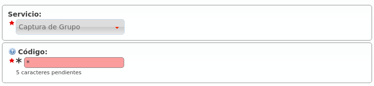Consejo
Los servicios que el administrador de empresa borre no podrán ser utilizados por sus usuarios.
Grabación de llamadas¶
Atención
Tenga en cuenta que la legislación local le puede requerir que anuncie que la llamada esta siendo grabada (en ocasiones a ambos participantes). Debería incluir un aviso en las locuciones de bienvenida para los DDI que tengan grabación automática habilitada.
IvozProvider permite grabar las llamadas que se cursan en 2 modalidades distintas:
Grabación automática para llamadas desde/hacia cierto DDI externo.
Grabación bajo demanda solicitada por un usuario en medio de una conversación.
Grabación automática por DDI¶
En el caso de grabaciones automáticas por DDI, se graba toda la conversación: desde el principio hasta el final.
Se distinguen 2 casos:
Llamadas entrantes a un DDI: la grabación seguirá mientras la parte externa de la llamada permanezca en la conversación.
Llamadas salientes utilizando un DDI como DDI saliente: mientras el interlocutor externo permanezca en la conversación, la grabación sigue.
Atención
El hecho de que mientras el interlocutor permanezca en llamada la grabación continúe, hace que no importe cuántes veces se transfiera la llamada de un usuario a otro, la grabación contendrá toda la conversación (desde el punto de vista del participante externo).
Grabar todas las llamadas de un DDI
Basta con editar el DDI en cuestión y habilitar las grabaciones:

Existen 4 opciones:
Desactivar la grabación
Activarla para llamadas entrantes a dicho DDI
Activarla para llamadas salientes que presente dicho DDI
Activarla para ambas
Grabación bajo demanda¶
La grabación bajo demanda u on-demand la tiene que activar el operador de marca para las empresas que la necesiten, sin más que editar su empresa y configurar el código deseado:

Advertencia
A diferencia de los Servicios comentado en la sección anterior, la funcionalidad de grabación bajo demanda se activa en mitad de una conversación.
Al contrario que las grabaciones automáticas, las realizadas bajo demanda pueden detenerse empleando el mismo proceso que las ha iniciado.
Activación por medio de tecla Record¶
Los terminales Yealink soportan el envío de mensajes SIP INFO con una cabecera Record (ver referencia). No es un estándar, pero al ser Yealink uno de los modelos soportados, IvozProvider incluye soporte para la activación de grabación bajo demanda de esta forma.
Importante
El código seleccionado no influye en este caso, pero la empresa sí que tiene que tener las grabaciones bajo demanda activadas.
La activación de las grabaciones es muy simple en este caso, basta con pulsar la tecla y el sistema inicia la grabación.
Activación por códigos DTMF¶
Comúnmente este tipo de funcionalidades se activan introduciendo una combinación de teclas durante la llamada. Se inicia el proceso después de algún tipo de notificación. Esta combinación es enviada empleando tonos DTMF empleando el mismo flujo de audio que la conversación (como se menciona en el RFC 4733).
IvozProvider soporta este tipo de activaciones bajo demanda pero con una importante pega. Para poder capturar estos códigos, la pbx debe procesar los paquetes de audio de la conversación, evitando así la posible liberación del flujo entre los agentes finales.
Importante
Habilitar este modo afecta en gran medida el rendimiento de la plataforma. Úselo bajo su propio riesgo.
Activación por medio de transferencia ciega frustrada¶
Existe otra forma de acceder a esta funcionalidad para los terminales que no tengan soporte para el método anterior.
Peligro
Este método de acceder a la funcionalidad es una forma imaginativa de hacerla accesible para terminales sin soporte nativo de tecla Record que es el método recomendado). En función del terminal en cuestión y de la configuración del mismo, resultará más o menos cómodo utilizar la funcionalidad (tecla rápida de transferencia ciega, no retener al interlocutor, etc.).
Los pasos a seguir en este método alternativo e imaginativo son los siguientes:
No se activa marcando el código en medio de la conversación.
Se activa iniciando una transferencia ciega al código configurado.
El sistema rechazará la transferencia e iniciará la grabación.
El usuario podrá volver a la conversación que tenía (si es que su terminal no ha vuelto solo) y seguir hablando.
¿Por qué esta forma tan peculiar de activar la grabación y no por medio de tonos normales?
El motivo de activar la grabación por medio de una transferencia ciega frustrada se debe a la Arquitectura general de la plataforma y, más concretamente, al flujo de audio RTP.
Listado de grabaciones¶
El administrador de empresa puede acceder a las grabaciones realizadas por medio de la sección Configuración de Empresa > Grabaciones:

Haciendo clic en una de ellas, podría escucharla desde la web o descargársela en formato MP3:

En el caso de una grabación bajo demanda, se indica qué usuario la inició:

Clientes Retail¶
Los clientes Retail son un tipo especial de compañía que solo provee un servicio de conectividad con los contratos de peering a través de cuentas retail.
Atención
Al contrario que las compañías de PBX virtual, todos los clientes Retail emplean el dominio de marca para identificar de manera inequívoca sus cuentas. Será preciso configurar el dominio de Marca para emplear esta funcionalidad.
Consejo
Los clientes Retail pueden ser habilitados en las Marcas a través de Features.
El objetivo de esta sección será describir cada una de las opciones de configuración asociadas a los clientes Retail incluidas en IvozProvider.
Cuentas Retail¶
Las cuentas Retail son la principal opción enrutable de los clientes Retail. Semejantes a los Friends en las compañías de PBX Virtual, las cuentas tienen todas las opciones de configuración necesarias para proveer un servicio de connectividad entre IvozProvider y una entidad SIP externa.
Advertencia
A pesar de que tanto los Contratos de peering como las cuentas Retail son definidas por el operador de marca, los primeros están diseñados para connectar con la red publica mientras que los segundos se emplean para conectar el sistema con otros agentes SIP.
Tipos de cuentas retail¶
Hay dos tipos principales de PBX SIP que puede emplear retail con IvozProvider:
Centralitas con conectividad directa: Esto implica que IvozProvider tiene la posibilidad de hablar SIP directamente sin más que dirigir su tráfico a una IP pública a un puerto concreto.
Centralitas tras NAT: No accesibles directamente. Este tipo de centralitas tendran que registrarse en IvozProvider (exactamente igual que lo hacen los Terminales)
¿Qué llamadas se envían a una cuenta retail?¶
Contrary to Friends, Retail Accounts have some simplifications and limitations.
Las cuentas Retail solo enrutan sus DDIs asignados
Las cuentas Retail solo realizan llamadas externas a través de Contratos de peering
Las cuentas Retail sólo reciben llamadas externas desde Contratos de peering
Configuracion de las cuentas retail¶
Estas son las opciones de configuracion de las Cuentas retail:
- Nombre
Nombre de la cuenta retail. Este nombre ha de ser único en toda la marca por lo que se recomienda emplear algun identificador secuencial. También se empleará en los mensajes SIP (enviado como usuario en la cabecera From).
- Descripción
Opcional. Información extra para esta cuenta retail
- Contraseña
Cuando una cuenta retail envia peticiones, IvozProvider se autenticará empleando esta contraseña. Como en otros agentes SIP en IvozProvider emplear contraseña ES OBLIGATORIO.
- Conexión directa
Si elijes ‘Sí’ aquí, tendras que informar el protocol, dirección y puerto donde se enviarán las peticiones de esta cuenta retail.
- DDI Saliente alternativo
Las llamadas externas de esta cuenta retail presentarán este DDI, a no ser que el DDI presentado sea uno de los asociados a la cuenta.
- Pais y Código de area
Empleado para las transformaciones numéricas de esta cuenta retail.
- Codecs permitidos
Como otras entidades SIP, las cuentas retail hablarán en el códec seleccionado.
- Dominio From
Las peticiones desde IvozProvider a esta cuenta incluirán este dominio en la cabecera From.
Servicio de buzón de voz¶
Cada cuenta retail tiene un buzón de voz al que poder desvíar las llamadas entrantes a través de los Desvíos de llamadas que se explican a continuación.
Importante
Se puede utilizar el Código de servicio de buzón de voz definido a nivel de marca para escuchar los mensajes de voz y para grabar una locución de buzón distinta a la estándar.
Desvíos de llamada¶
Se pueden configurar desvíos de llamadas a nivel de cuenta retail. Estos son los campos disponibles:
- Activado
Determina si el desvío debe aplicarse o no. De esta forma, un usuario puede configurar los desvíos que más utilice e ir activándolos y desactivándolos.
- Tipo de desvío
Indica cuándo aplica el desvío:
Incondicional: siempre.
No contesta: cuando la llamada no se contesta en X segundos.
Ocupado: Cuando la cuenta retail está ocupada (código de respuesta 486).
No registrada: cuando la cuenta retail no está registrada contra IvozProvider.
- Tipo de destino
Indica a dónde se enviará la llamada cuando el desvío aplique.
Buzón de voz de la cuenta retail
Número externo
Atención
Las llamadas desviadas por un desvío mantendrán la identificación original del llamante, añadiendo los datos del desviador en una cabecera SIP Diversion.
Asterisk como cliente de cuenta retail¶
En el otro extremo de una cuenta puede haber cualquier entidad. Esta sección toma como ejemplo una PBX Asterisk usando su driver de canal SIP que deseamos conectar a IvozProvider
register cuenta¶
En caso de no estar directamente visible, el Asterisk tendrá que registrarse en IvozProvider (al igual que hacen los terminales).
La configuración sería tal que:
register => account-name:account-password@ivozprovider-brand.sip-domain.com
peer cuenta¶
[name-peer]
type=peer
host=ivozprovider-brand.sip-domain.com
context=XXXXXX
disallow=all
allow=alaw
defaultuser=account-name
secret=account-password
fromdomain=ivozprovider-brand.sip-domain.com
insecure=port,invite
Advertencia
Los clientes tras cuentas no pueden desafiar a IvozProvider, al igual que un terminal no desafía a IvozProvider cuando éste le llama. De ahí el insecure.
Filtros DDI Retail¶
Los Filtros Externos de Retail pueden asignarse a DDIs permitiendo un desvío temporal a números externos.
Configuración de Filtros¶
Estas son las opciones configurables de los Filtros externos de Retail:
- Nombre
Nombre del filtro.
- Número
Destino externo para este filtro.
Atención
Las llamadas desviadas por un filtro mantendrán la identificación original del llamante, añadiendo los datos del desviador en una cabecera SIP Diversion.
Error
Los filtros tienen prevalencia sobre los desvíos definidos a nivel de cuenta, ya que aplican antes.
DDIs Retail¶
Los DDIs son el punto de entrada externa desde Contratos de peering a Clientes Retail que se enrutarán a través de Cuentas de Retail.
Filtros DDI¶
Podemos asignar un filtro de entrada configurado en la anterior sección. Al contrario que los filtros externos disponibles en las PBX Virtuales, los filtros de los DDI de Retail tan solo proporcionan un desvío estático a un número externo.
Rutas de DDI Retail¶
Los DDI de Retail solo pueden ser enrutados a Cuentas Retail o Faxes Virtuales.
Consejo
Enrutar un DDI a través de una Cuenta Retail permitirá realizar llamadas externas desde esa cuenta presentando dicho DDI como origen.
Grabaciones¶
Si el Cliente Retail tiene la feature Grabaciones habilitada, los DDIs también podrán grabar las llamadas salientes y/o entrantes·
Sistema de Fax Virtual¶
IvozProvider incluye una solución de faxing simple pero eficiente que permite:
Enviar archivos PDF vía Fax.
Recibir faxes por email o verlos a través del portal web.
Error
IvozProvider usa T.38 para enviar y recibir faxes. El Operador de Marca debe utilizar un contrato de peering que tenga soporte para T.38.
Creando un fax virtual¶
Este es el interfaz que se presenta cuando creamos un nuevo fax en la sección Configuración de compañía > Faxes Virtuales:

Los campos son prácticamente auto-explicativos:
- Nombre
Utilizado en el resto de secciones para referenciar este fax
- Dirección de correo electrónico
Dirección de correo electrónico en la que queremos recibir los faxes entrantes (si seleccionamos la opción ‘Enviar por email’
- DDI de salida
DDI utilizado como número origen en los faxes salientes
Para recibir faxes en este DDI, tenemos que apuntarlo a nuestro nuevo fax en la sección DDIs:

El operador de marca puede elegir una o más rutas de salida para enviar faxes:

Esta ruta aplica a todos los faxes enviados por la compañía seleccionada (o por todas las compañías).
Nota
Las lógicas de balanceo y failover descritas en secciones anteriores también funcionan para las rutas de faxes.
Importante
Si no se define ninguna ruta específica de fax, los faxes se enrutarán como llamadas de voz normales.
Enviar un fax¶
Enviar un fax es una tarea sencilla. En primer lugar, subimos el archivo PDF y escribimos el número de destino:
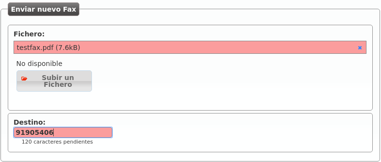Este listado muestra el fax y su estado:
Visualización de faxes entrantes¶
Los faxes entrantes se pueden recibir vía correo electrónico, pero también pueden ser visualizados y descargados desde el panel web pulsando:

Tarificación y facturación¶
En este bloque se tratará un tema de primordial importancia para los administradores de marca:
Crear planes de precio para poner precio a las llamadas de los usuarios.
Crear facturas que recojan el detalle y el consumo de sus empresas.
Pare ello, abordaremos las siguientes cuestiones:
Histórico de llamadas¶
Los históricos de llamadas muestran todas las llamadas de la plataforma y se muestran a 3 niveles:
Gestión general > Histórico de llamadas
Configuración de Marca > Histórico de llamadas
Configuración de Empresa > Histórico de llamadas
En cada uno de los niveles se muestran las llamadas filtradas convenientemente.
A nivel global (god)
Muestra todas las llamadas de la plataforma, indicando la marca y la empresa de cada una de ellas:

A nivel de marca.
Muestra todas las llamadas de la marca emulada, indicando la empresa de cada una de ellas:

Company level
Muestra todas las llamadas de la empresa emulada:
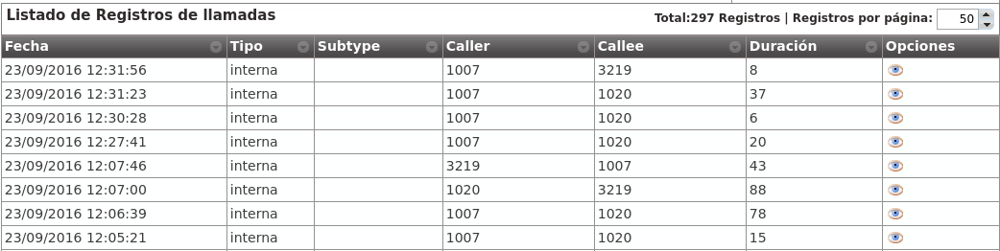Nota
El exportador a CSV permite exportar el listado para su posterior almacenamiento o procesado.
Consejo
Si se accede a una llamada concreta, se muestra información adicional sobre la misma. Esta información adicional depende del nivel (god, marca o empresa) y provee información sobre desvíos, transferencias, etc.
Llamadas facturables¶
Los listados de llamadas de las secciones Llamadas facturables muestran solo las llamadas que implican coste.
Importante
La gran diferencia respecto a las llamadas del Histórico de llamadas es que todas las que aparecen aquí implican coste (no aparecen, por tanto, llamadas internas, etc.)
Se muestra el coste asociado a las llamadas (una vez calculado) y, dado que las empresas son notificadas de sus llamadas por medio de facturas emitidas por el operador de marca, solo se existe a dos niveles:
A nivel global (god).
A nivel de marca.
Estos listados muestran la siguiente información:
- Fecha
Fecha y hora del establecimiento de la llamada.
- Marca
Solo visible a nivel god, indica la marca de la empresa en cuestión.
- Compañía
Empresa responsable de la llamada.
- Destino
Número externo al que se ha llamado.
- Patrón de destino (que es en realidad el patrón de precio)
Indica el patrón de precio en base al cual se ha puesto precio a la llamada.
- Duración
Indica cuánto ha durado la llamada.
- Tarificado (sí/no)
Indica si el proceso que pone precio a las llamadas ha calculado el precio de esta llamada concreta.
- Precio
Coste calculado para la llamada.
- Plan de precio
Plan de precio en base al cual se ha puesto precio a la llamada.
- Contrato de peering
Indica por qué Contrato de peering ha salido la llamada.
- Factura
Indica si la llamada está incluida en alguna factura.
- Tipo (entrante/saliente)
Dado que ciertas llamadas entrantes pueden implicar coste (ver tarificación de llamadas entrantes), indica si la llamada es entrante o saliente.
Nota
Las llamadas aparecen en este listado en cuanto se cuelgan. Pasados unos minutos, el proceso que pone precios a las llamadas habrá tarificado la llamada (Tarificado igual a ‘Sí’) y tendremos disponible el Precio calculado.
Planes de precio¶
En la sección Sin plan de precio, no hay llamada se hacía una introducción bastante completa sobre el proceso manual de creación de un plan de precios y los conceptos más importantes:
Un plan de precios agrupa un listado de patrones de precio (prefijos de llamada) con sus detalles de precio:
Precio por minuto
Establecimiento de llamada
Facturación por segundos / minutos /etc.
Un plan de precios se asocia a una empresa concreta, indicando el período de validez de dicho plan.
Una empresa podía tener varios planes de precios en un momento concreto para una llamada concreta.
En este último caso, el coste de la llamada se calcularía utilizando el plan de precio de menor métrica.
Creación manual¶
La creación manual de un plan de precio implicaba la creación previa de un patrón de precio.
En ese momento, es posible que el futuro administrador de marca se haya dado cuenta de la titánica tarea que implicaría crear miles de patrones de precio (254 países por las distintas redes móviles, fijos, numeraciones especiales, etc.) para luego poder agruparlos en un plan de precios.
Es por ello que el proceso de creación de planes y patrones de precio se realiza partiendo de un CSV.
Importación vía CSV¶
El primer paso es crear un plan de precios vacío sobre el que importar nuestros precios (sección Configuración de marca > Planes de precio):

Accedemos al listado (vacío) del plan de precio que acabamos de crear:

El botón clave para este proceso de importación masiva es el siguiente:

Una vez elegido el archivo a importar, se nos presenta la siguiente ventana:
En esta ventana podríamos seleccionar qué contiene cada columna, en caso de no haber creado el CSV en el formato recomendado. Del mismo modo, se nos ofrece la posibilidad de ignorar la primera línea, en caso de que incluya los nombres de las columnas en lugar de datos.
Consejo
El proceso de importación se realiza en segundo plano, permitiendo al administrador de marca seguir configurando otros aspectos de la plataforma mientras se completa.
Formato CSV¶
A pesar de que la ventana anterior nos permite importar archivos CSV en distintos formatos, lo mejor es importar un archivo en el formato adecuado para simplicar este proceso.
El formato del archivo CSV está explicado en la propia sección de ayuda contextual, que incluye un enlace para poder descargar un archivo de ejemplo:

El orden de las columnas debería de ser:
Nombre del patrón de precio
Descripción del patrón de precio
Prefijo
Precio por minuto
Precio de establecimiento
Período de facturación
Nota
Se recomienda entrecomillar con comillas dobles las entradas alfanuméricas, aunque no es necesario para entradas con una única palabra (o entradas sin símbolos raros). Si contienen coma, es OBLIGATORIO entrecomillarlos.
Error
Los números decimales tienen que usar el punto como separador decimal.
Nota
Las entradas numéricas se pueden entrecomillar con comillas dobles, pero no es obligatorio.
Importante
El sistema de importación creará los patrones de precio que sean necesarios. Si ya existe un patrón de precios con ese prefijo, no se creará, simplemente se vinculará.
Advertencia
El precio de la llamada sera incrementado cada periodo de facturacion.
Si se pone a 1, implica una tarificación por segundos y cada segundo implicará un coste que será el precio por minuto dividido entre 60.
Si se pone a 60, implica una tarificación por minutos y cada minuto implicará un coste que será el precio por minuto.
Una vez completada la importación, solo faltaría asociar el nuevo plan de precios a las empresas que queramos, siguiendo el procedimiento explicado en el bloque anterior.
Tarificación de llamadas¶
Tarificar una llamada es la acción de poner precio a una llamada que implica coste.
Tarificación automática¶
Tal y como se ha explicado con anterioridad, el proceso de tarificación es automático:
En el momento en el que una llamada se va a establecer, se verifica que se vaya a poder tarificar.
Si no se va a poder tarificar atendiendo a los planes de precios activos para la empresa, la llamada no se cursará.
En el momento en el que una llamada que implique coste se cuelga, aparece en el listado de Llamadas facturables.
Pasados unos minutos, el proceso tarificador evaluará las llamadas tarificables sin coste y rellenará los siguientes campos del registro anterior:
Precio
Plan de precio
Patrón de destino (que es en realidad el patrón de precio)
Tarificado a ‘Sí’
Retarificación manual¶
Puede ocurrir que una llamada se tarifique de forma incorrecta, por múltiples motivos:
Plan de precio importado con una errata.
Múltiples planes de precios con métricas incorrectas.
Plan de precio adicional sin vincular.
- Etc.
Para estos casos, el administrador de marca puede re-tarificar las llamadas que considere mal tarificadas.
Importante
Retarificar una llamada consiste en volver a calcular el precio de la misma. Lógicamente, la retarificación se calculará en el momento solicitado, teniendo en cuenta las configuración actual de planes de precio y no las del momento del establecimiento de la llamada).
Para retarificar, basta con seleccionar las llamadas en Configuración de Marca > Llamada facturables y presionar el botón Tarificar llamadas:

Error
No se puede retarificar una llamada que esté incluida en una factura. Es decir, si la llamada seleccionada tiene el campo Factura con valor, habrá que borrar esta factura previamente. El motivo es estar seguros que no existen facturas con llamadas mal tarificadas: si retarificas una llamada, regeneras la factura que la contiene.
Generación de facturas¶
El objetivo final de todo el proceso de facturación es generar facturas que incluyan las llamadas con coste de una empresa concreta.
Plantillas de facturas¶
Antes de generar una factura de ejemplo, es importante entender que las facturas generadas utilizan unas plantillas que permiten su modificación.
Consejo
De este modo, cada operador de marca puede crear plantillas con los datos deseados, la estética deseada, añadir logos y hasta gráficas de consumo.
Las plantillas son interpretadas con handlebars y renderizadas con la librería wkhtmltopdf.
La ayuda contextual de la sección Configuración de Marca > Plantillas de facturas incluye una explicación resumida del proceso de creación de plantillas. En la página oficial de wkhtmltopdf puede encontrar más información. También puede profundicar en las expresiones disponibles en las plantillas aquí.
Por defecto, IvozProvider incluye las siguientes plantillas de ejemplo (en la ayuda contextual se pueden encontrar enlaces a las mismas):

Costes fijos¶
Los costes fijos son un concepto fijo que se pueden añadir a las facturas que utilicen plantillas que tengan en cuenta costes fijos.
Sirva la siguiente imagen de ejemplo (sección Costes Fijos):

A la hora de generar una factura, como se verá más adelante, se podrá indicar cuáles de estos conceptos se incluyen en la factura (y en qué cantidades).
Creacion de una factura¶
La sección Facturas es la que permite al operador de marca generar facturas para emitir a sus empresas.
Añadimos una factura nueva para explicar el proceso:

- Número
Será incluído en la factura y representa el número de factura
- Compañía
Empresa para la cual estamos generando la factura
- Fecha inicio/fin
Tramo temporal cuyas llamadas queremos tener en cuenta
- Impuesto
Impuesto a añadir al coste total calculado
- Plantilla
Plantilla que queremos utilizar para generar esta factura
Añadamos ahora unos costes fijos a esta factura concreta pulsando:

Y añadamos los costes fijos que queramos, así como sus cantidades:

En este punto, podemos generar la factura pulsando:
Pulsando el siguiente botón podemos ver las llamadas que han sido incluidas en la factura:
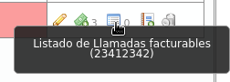Y pulsando este botón podemos descargar la factura en formato PDF:
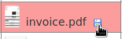Advertencia
La fecha fin tiene que ser una fecha ya pasada. Es decir, no se puede sacar facturas de tramos futuros o del día actual.
Error
Todas las llamadas del tramo escogido tienen que estar facturadas para poder emitir la factura.
Provisión de terminales¶
Introducción¶
IvozProvider soporta provisionar terminales vía HTTP/HTTPS que sigan la forma de provisionarse que se explica a continuación:
Cuando un terminal sale de la caja, se alimenta y se conecta a la red:
Pide IP por DHCP.
Se fija en la opción 66 de DHCP que le indica a quién tiene que pedir su configuración.
Pide un primer archivo añadiendo a la ruta recibida por DHCP un archivo estático (cada modelo de terminal, uno distinto).
En ese archivo se le puede indicar un siguiente archivo a pedir.
Todo terminal que sea capaz de adaptarse a este formato podrá provisionarse utilizando la sección Configuración general > Fabricantes de terminales.
Ejemplo Cisco SPA504G
Cisco 504G se despierta y pide IP.
Pide la configuración vía http a http://provision.ejemplo.com/provision/spa504g.cfg
Todos los 504G solicitan el mismo archivo (spa504g.cfg), añadiéndolo a la ruta que reciban.
En ese primer archivo común se especifican los parámetros comunes a todos los terminales de ese modelo concreto y qué archivo tienen que pedir a continuación (ejemplo https://provision.example.com/provision/$MAC.cfg)
De esta forma, hacemos que cada terminal (la MAC es única) pida un archivo concreto (y distinto) una vez que ha pedido el genérico.
En este archivo se le sirve su configuración específica:
Usuario
Contraseña
Dominio SIP
Nota
El sistema de provisión de IvozProvider, a día de hoy, configura los terminales con el único objetivo de que se registren y se queden en el idioma del usuario.
Configuración de modelos soportados¶
IvozProvider utiliza un sistema de plantillas que permite que el operador global (God) defina nuevos modelos de terminales y configure los archivos que se les servirá.
La sección de ayuda de Fabricantes de Terminales contiene ejemplos que funcionan (en el momento de escribir esta documentación) con el sistema de provisión de IvozProvider.
Consejo
Estos modelos aparecen en la sección tras la instalación, pero hay que entrar a cada uno de ellos a cargar la configuración por defecto antes de poder usarlos (opción Restore default template).
Error
Cambios en el firmware de los terminales pueden provocar que los ejemplos proporcionados dejen de funcionar. Se intentará mantenerlos actualizados, pero no podemos garantizar que siempre lo estén.
Analizando las plantillas sugeridas, puede hacerse una idea básica de la flexibilidad del sistema para configurar cualquier modelo de terminal en el mercado y para adaptarse de posibles cambios en los ejemplos dados.
Detalles técnicos¶
Imaginemos un escenario con esta configuración:
URLs de provisión:
Archivo genérico: http://PROV_IP/provision
Archivo específico: https://PROV_IP:PROV_PORT/provision
- TerminalModels.genericUrlPattern: y000000000044.cfg
¿Qué URLs de petición serán correctas?
Para el archivo genérico, solo una: http://PROV_IP/provision/y000000000044.cfg
Para el archivo específico, la petición tiene que satisfacer las siguientes reglas
Todas las peticiones HTTP son erróneas.
Las peticiones HTTPS al puerto 443 son erróneas (se tiene que usar PROV_PORT)
Las subrutas después de la URL de provisión son ignoradas, tanto en la petición como en el campo specificUrlPattern.
La extensión de la petición tiene que ser la misma que la extensión del campo specificUrlPattern (en caso de que la tenga). Si no, la extensión es ignorada.
El nombre del archivo solicitado tiene que coincidir exactamente con el nombre especificado en specificUrlPattern, una vez que {mac} se sustituya por el valor adecuado.
La dirección MAC no distingue mayúsculas/minúsculas y puede contener dos puntos o no.
Analicemos los siguientes ejemplos para entender estas reglas mejor:
Ejemplo 1 - TerminalModels.specificUrlPattern: {mac}.cfg
Peticiones correctas:
https://PROV_IP:PROV_PORT/provision/aabbccddeeff.cfg
https://PROV_IP:PROV_PORT/provision/aa:bb:cc:dd:ee:ff.cfg
https://PROV_IP:PROV_PORT/provision/aabbccdd:ee:ff.cfg
https://PROV_IP:PROV_PORT/provision/aabbccddeeff.cfg
https://PROV_IP:PROV_PORT/provision/AABBCCDDEEFF.cfg
https://PROV_IP:PROV_PORT/provision/subpath1/aabbccddeeff.cfg
https://PROV_IP:PROV_PORT/provision/subpath1/subpath2/aabbccddeeff.cfg
Peticiones erróneas:
https://PROV_IP:PROV_PORT/provision/aabbccddeeff.boot
https://PROV_IP:PROV_PORT/provision/subpath1/subpath2/aabbccddeeff.boot
Este ejemplo es idéntico a ‘t23/{mac}.cfg’, ya que las subrutas se ignoran.
Ejemplo 2 - TerminalModels.specificUrlPattern: {mac}
Todos los ejemplos anteriores son correctos, ya que la extensión de la petición se ignora al no haber especificado extensión alguna en specificUrlPattern.
Este ejemplo es idéntico a ‘t23/{mac}’, ya que las subrutas se ignoran.
Ejemplo 3 - TerminalModels.specificUrlPattern: yea-{mac}.cfg
Todos los ejemplos anteriores son incorrectos, ya que ninguno contiene ‘yea-‘ (en minúsculas).
Peticiones correctas:
https://PROV_IP:PROV_PORT/provision/subpath1/yea-aabbccdd:ee:ff.cfg
Peticiones erróneas:
https://PROV_IP:PROV_PORT/provision/subpath1/yea-aabbccdd:ee:ff.boot
https://PROV_IP:PROV_PORT/provision/subpath1/YEA-aabbccdd:ee:ff.cfg
Este ejemplo es idéntico a ‘t23/yea-{mac}.cfg’, ya que las subrutas se ignoran.
Ejemplo 4 - TerminalModels.specificUrlPattern: yea-{mac}
Como no se especifica ninguna extensión:
https://PROV_IP:PROV_PORT/provision/subpath1/yea-aabbccdd:ee:ff.cfg
https://PROV_IP:PROV_PORT/provision/subpath1/yea-aabbccdd:ee:ff.boot
Peticiones erróneas:
https://PROV_IP:PROV_PORT/provision/subpath1/YEA-aabbccdd:ee:ff.cfg
Este ejemplo es idéntico a ‘t23/yea-{mac}’, ya que las subrutas se ignoran.
Portal de usuario¶
IvozProvider provee un portal de usuario donde los usuarios finales pueden realizar las siguientes acciones:
Ver un listado de las llamadas en las que ha participado.
Configurar sus desvíos:
A su buzón de voz
A una extensión interna
A un número externo
Activar funcionalidades:
Llamada en espera
No molestar
Ver el estado del registro de su dispositivo SIP
URLs de acceso¶
Para acceder al portal de usuario, es necesario que previamente se haya definido en IvozProvider la URL (que apuntará a cualquiera de las IPs de la plataforma).
Existen 2 roles que pueden realizar esta tarea:
Operador global¶
En la sección Gestión general > Marcas se pueden configurar tantas URLs de Usuario como se desee, por medio del botón Listado de portales de cada marca.
Nota
La vinculación, por tanto, es de URL <-> Marca, por lo que el operador global puede elegir entre crear una URL para cada marca o uno por cada empresa de dicha marca.
Advertencia
La URL tiene que ser https.
Esta sección permite configurar el logo que se mostrará, así como un tema de colores y una cadena de caracteres que se utilizará como título.
Consejo
De esta forma, si se desea, se puede adaptar a los colores corporativos de cada empresa.
Operador de marca¶
El operador marca puede realizar también esta misma tarea, para ser autónomo y no depender del operador global para crear las URLs de sus empresas.
De esta forma, puede configurar tantas URLs como quiera, con los dominios, colores y logos que desee, para cada una de sus empresas.
La sección para realizar esta tarea es Configuración de Marca > Portal URLs.
Credenciales de acceso¶
Las credenciales de acceso al portal de usuario se configuran en la sección Configuración de Empresa > Usuarios.
En concreto:
En el bloque Información de Login, se activa/desactiva el acceso de cada usuario.
En el apartado Contraseña se especifica la contraseña del usuario.
El portal de usuario pedirá el email del usuario para acceder, por lo que cada usuario que quiera acceder al portal tiene que tener una dirección de email.
Advertencia
El email de cada usuario tiene que ser único a nivel global.
Elementos de seguridad¶
Cortafuegos¶
IvozProvider actualmente no viene con un cortafuegos configurado pero...
Peligro
Recomendamos encarecidamente que las instalaciones en producción cuenten con un cortafuegos que protejan la plataforma del salvaje Internet.
Los metodos de protección podrían ser:
Cortafuegos locales basados en iptables
Cortafuegos externos
Ambos
Servicios/Puertos expuestos¶
Estos son los puertos que IvozProvider necesita exponer para funcionar correctamente:
Señalizacion SIP:
Puerto 5060 (TCP/UDP)
Puerto 5061 (TCP)
Puerto 7060 (TCP/UDP) y 7061 TCP (para casos en que ambos proxies compartan la misma dirección IP)
Flujo de audio RTP:
Rango de puertos 13000-19000 UDP
Portal web y provisión:
Puertos TCP 443, 1443 y 2443
Consejo
Recomendamos emplear el módulo GeoIP de iptales para rechazar tráfico de paises en los que no se tenga ningun usuario.
Rangos de IP autorizados por empresa¶
En el proceso de creación de empresas nos saltamos deliberademente un mecanismo de seguridad que limita las direcciones IP o rangos de red que pueden utilizar las credenciales de los terminales de una empresa concreta.
Se puede activar en la sección Configuración de Marca > Empresas:

Todo usuario que quiera conectarse desde una red no incluida no podrá, a pesar de disponer de unas credenciales válidas.
Advertencia
Una vez activado el filtrado, es obligatorio añadir redes o direcciones válidas o, por el contrario, todas las llamadas se rechazarán:

Se pueden añadir direcciones IP y rangos de direcciones, en formato CIDR (IP/mask)

Importante
Este mecanismo limita los orígenes de los usuarios de una empresa, no filtra en absoluto los orígenes de los Contratos de Peering.
Usuarios remotos¶
Algunos usuarios de ciertas empresas viajan con mucha frecuencia y necesitan llamar desde redes externas no controladas. Estos usuarios obligan a la empresa a desactivar el mecanismo de protección de IP.
Para solventar este problema, en la sección de Usuarios existe la opción Llamadas desde IPs no autorizadas que permite que ciertos usuarios llamen desde redes no permitidas mientras su empresa sigue protegida con el mecanismo de protección de IP.
Para evitar que estos usuarios signifiquen una brecha de seguridad, el número de llamadas que pueden hacer desde redes no autorizadas se limita a 1, 2 ó 3.
Advertencia
Solo se cuentan y se limitan las llamadas generadas por estos usuarios (tanto las internas como las externas), la recepción de llamadas no se ve afectada por esta funcionalidad (sí por el parámetro Límite de llamadas).
En resumen, con esta funcionalidad:
Ciertos usuarios pueden realizar un determinado número de llamadas desde IPs no autorizadas.
Estas llamadas se cuentan y se limitan.
Ejemplo 1 - Compañía sin mecanismo de protección de IP
Al no estar el mecanismo activado, el valor de este parámetro no aplica.
Ejemplo 2- Compañía con mecanismo de protección de IP
Si el usuario llamada desde una IP autorizada, el valor de este parámetro no aplica: la llamada se permite y no se cuenta.
Si el usuario llama desde una IP NO autorizada, se verifica el valor de este parámetro y, en caso de tener un valor 1, 2 ó 3 y de no haber superado este límite, la llamada se permite y se cuenta. Si no, se rechaza la llamada.
Nota
Si el valor de Llamadas desde IPs no autorizadas se configura a Ninguna el usuario tendrá que cumplir la política de IPs de su empresa, cualquiera que sea.
Anti-Flooding¶
IvozProvider incorpora un mecanismo de anti-flooding que evita que un emisor sature nuestra plataforma enviando peticiones. Ambos proxies (usuarios y salida) incorporan este mecanismo, que limita el número de peticiones desde un dirección origen en un tramo concreto de tiempo.
Advertencia
Cuando un origen llega al límite, el proxy dejará de contestarle durante un tiempo dado. Pasado ese tiempo, volverá a contestarle con normalidad
Ciertos orígenes que están automáticamente excluidos de este mecanismo de anti-flooding:
Servidores de aplicación de la plataforma.
IPs o rangos autorizados de empresas (ver sección anterior).
El operador global puede añadir otras direcciones que queden excluidas de este mecanismo por medio del apartado Configuración global > IPs de confianza

Límite de llamadas concurrentes¶
Este mecanismo limita las llamadas externas de un cliente (vPBX/retail). También se puede configurar a nivel de marca.
Advertencia
Los límites de marca y de empresa (vPBX/retail) no están relacionados de ninguna manera (es decir, si una marca tiene 10, la suma de llamadas de sus empresas puede sumar más de 10). Aplicará el límite que antes sea alcanzado.
Truco
Para desactivar este mecanismo, basta con fijar el valor a 0.
Mantenimiento de la solución¶
A continuación se describen las herramientas que incorpora IvozProvider para facilitar el mantenimiento de la solución:
Analizando el tráfico SIP¶
A pesar de que todas las instalaciones en producción de IvozProvider mantenidas por Irontec incluyen un servidor Homer SIP Capture, éste no se incluye en la versión standalone de IvozProvider. El motivo es que somos partidarios de instalar el excepcional stack SIPCAPTURE en una máquina adicional.
El visor de mensajes SIP en Ncurses sngrep desarrollado por Irontec es en la actualidad la herramienta preferente para analizar el tráfico SIP de la solución.

sngrep¶
Capturar todo el tráfico SIP:
sngrep
Capturar solo el tráfico relativo a llamadas:
sngrep -c
Capturar SIP y RTP:
sngrep -c -r
Para más información, acceder a la página oficial del proyecto.
Visor de logs¶
A pesar de que todas las instalaciones en producción de IvozProvider mantenidas por Irontec incluyen un servidor Graylog, journalctl es actualmente la única herramientas para inspeccionar los mensajes de log generados por los distintos elementos de la solución en el pasado.
CLI de Asterisk¶
El CLI de Asterisk proporciona toneladas de información (formateadas de una forma legible y estética) en tiempo real sobre todo lo que está sucediendo y permite encontrar posibles errores:

Puedes acceder al CLI escribiendo ast en la consola.
Visualización de logs de Kamailio en tiempo real¶
Se pueden visualizar los logs de Kamailio ejecutando kamtail-proxyusers y kamtail-proxytrunks en la consola:
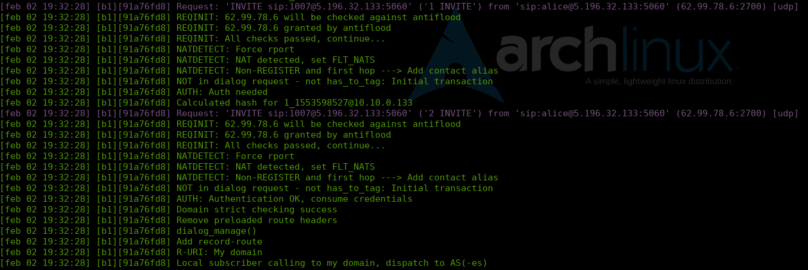